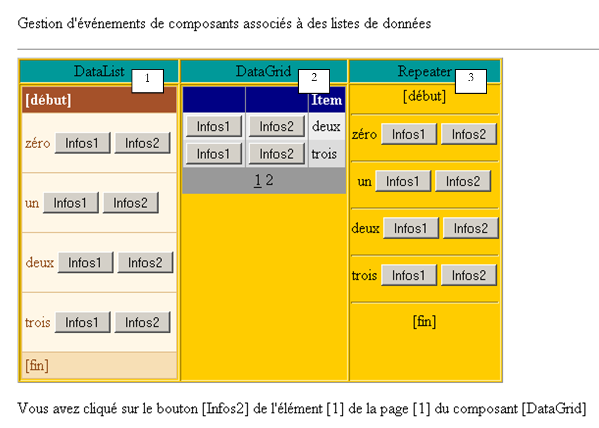
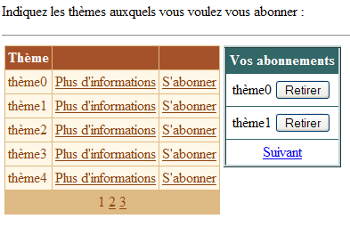
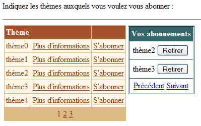
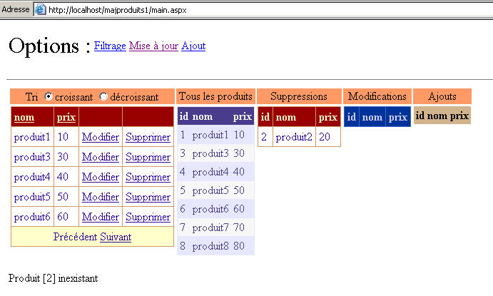
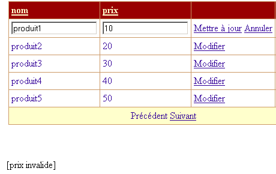
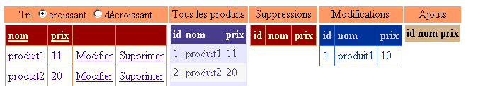
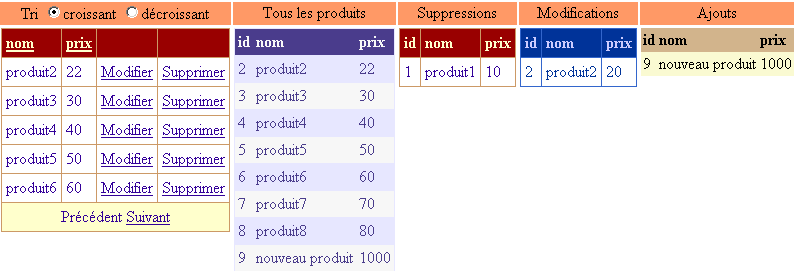
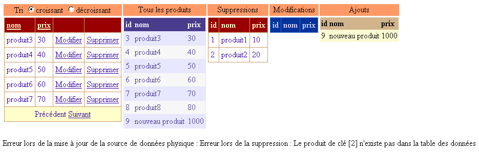
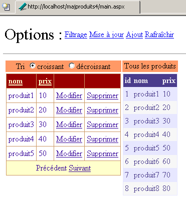
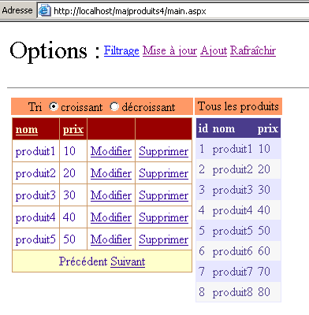

9. Componenti server ASP - 3
9.1. Introduzione
Continuiamo il nostro lavoro sull'interfaccia utente esplorando le funzionalità dei componenti [DataList] e [DataGrid], in particolare nell'ambito dell'aggiornamento dei dati che visualizzano
9.2. Gestione degli eventi associati ai dati nei componenti con binding
9.2.1. L'esempio
Consideriamo la pagina seguente:
 |
La pagina include tre componenti associati a un elenco di dati:
- un componente [DataList] denominato [DataList1]
- un componente [DataGrid] denominato [DataGrid1]
- un componente [Repeater] denominato [Repeater1]
L'elenco di dati associato è l'array {"zero", "uno", "due", "tre"}. Ciascuno di questi punti dati è associato a un gruppo di due pulsanti denominati [Info1] e [Info2]. Quando l'utente fa clic su uno dei pulsanti, viene visualizzato il nome del pulsante su cui ha fatto clic. L'obiettivo in questo caso è dimostrare come gestire un elenco di pulsanti o collegamenti.
9.2.2. Configurazione dei componenti
Il componente [DataList1] è configurato come segue:
<asp:datalist id="DataList1" ... runat="server">
<SelectedItemStyle ...</SelectedItemStyle>
<HeaderTemplate>
[début]
</HeaderTemplate>
<FooterTemplate>
[fin]
</FooterTemplate>
<ItemStyle ...></ItemStyle>
<ItemTemplate>
<P><%# Container.DataItem %>
<asp:Button runat="server" Text="Infos1" CommandName="infos1"></asp:Button>
<asp:Button runat="server" Text="Infos2" CommandName="infos2"></asp:Button></P>
</ItemTemplate>
<FooterStyle ...></FooterStyle>
<HeaderStyle ...></HeaderStyle>
</asp:datalist>
Abbiamo omesso tutto ciò che riguarda l'aspetto del [DataList] per concentrarci esclusivamente sul suo contenuto:
- la sezione <HeaderTemplate> definisce l'intestazione del [DataList], mentre la sezione <FooterTemplate> definisce il piè di pagina.
- La sezione <ItemTemplate> è il modello di visualizzazione utilizzato per ogni elemento nell'elenco dati associato. Contiene i seguenti elementi:
- il valore dell'elemento di dati corrente nell'elenco di dati associato al componente: <%# Container.DataItem %>
- due pulsanti denominati rispettivamente [Info1] e [Info2]. La classe [Button] ha un attributo [CommandName] che viene utilizzato qui. Ci permetterà di determinare quale pulsante ha attivato un evento nel [DataList]. Per gestire i clic sui pulsanti, avremo un unico gestore di eventi collegato alla [DataList] stessa, non ai pulsanti. Questo gestore riceverà informazioni che indicano su quale riga della [DataList] si è verificato il clic. L'attributo [CommandName] ci farà sapere quale pulsante su quella riga ha attivato il clic.
Il componente [Repeater1] è configurato in modo molto simile:
<asp:repeater id="Repeater1" runat="server">
<HeaderTemplate>
[début]<hr />
</HeaderTemplate>
<FooterTemplate>
<hr />
[fin]
</FooterTemplate>
<SeparatorTemplate>
<hr />
</SeparatorTemplate>
<ItemTemplate>
<%# Container.DataItem %>
<asp:Button runat="server" Text="Infos1" CommandName="infos1"></asp:Button>
<asp:Button runat="server" Text="Infos2" CommandName="infos2"></asp:Button></P>
</ItemTemplate>
</asp:repeater>
Abbiamo semplicemente aggiunto una sezione <SeparatorTemplate> in modo che i dati successivi visualizzati dal componente siano separati da una barra orizzontale.
Infine, il componente [DataGrid1] è configurato come segue:
<asp:datagrid id="DataGrid1" ... runat="server" PageSize="2" AllowPaging="True">
<SelectedItemStyle ...></SelectedItemStyle>
<AlternatingItemStyle ...></AlternatingItemStyle>
<ItemStyle ...></ItemStyle>
<HeaderStyle ...></HeaderStyle>
<FooterStyle ....></FooterStyle>
<Columns>
<asp:ButtonColumn Text="Infos1" ButtonType="PushButton" CommandName="Infos1">
</asp:ButtonColumn>
<asp:ButtonColumn Text="Infos2" ButtonType="PushButton" CommandName="Infos2">
</asp:ButtonColumn>
</Columns>
<PagerStyle .... Mode="NumericPages"></PagerStyle>
</asp:datagrid>
Anche in questo caso abbiamo omesso le informazioni relative allo stile (colori, larghezze, ecc.). Ci troviamo in modalità di generazione automatica delle colonne, che è la modalità predefinita per [DataGrid]. Ciò significa che ci saranno tante colonne quante ce ne sono nell'origine dati. In questo caso, ce n'è una. Abbiamo aggiunto altre due colonne contrassegnate con <asp:ButtonColumn>. Definiamo informazioni simili a quelle definite per gli altri due componenti, oltre al tipo di pulsante, che in questo caso è [PushButton]. Il tipo predefinito è [LinkButton], ovvero un collegamento. Inoltre, i dati saranno impaginati [AllowPaging=true] con una dimensione di pagina di due elementi [PageSize=2].
9.2.3. Il codice del layout della pagina
Il codice di presentazione per la nostra pagina di esempio è stato inserito in un file denominato [main.aspx]:
<%@ page codebehind="main.aspx.vb" inherits="vs.main" autoeventwireup="false" %>
<HTML>
<HEAD>
</HEAD>
<body>
<form runat="server">
<P>Gestion d'événements de composants associés à des listes de données</P>
<HR width="100%" SIZE="1">
<table cellSpacing="1" cellPadding="1" bgColor="#ffcc00" border="1">
<tr>
<td ...>DataList</td>
<td ...>DataGrid</td>
<td ...>Repeater</td>
</tr>
<tr>
<td ...>
<asp:datalist id="DataList1" ... runat="server">
<HeaderTemplate>
[début]
</HeaderTemplate>
<FooterTemplate>
[fin]
</FooterTemplate>
<ItemStyle ...></ItemStyle>
<ItemTemplate>
<P><%# Container.DataItem %>
<asp:Button runat="server" Text="Infos1" CommandName="infos1"></asp:Button>
<asp:Button runat="server" Text="Infos2" CommandName="infos2"></asp:Button></P>
</ItemTemplate>
<FooterStyle ...></FooterStyle>
<HeaderStyle ....></HeaderStyle>
</asp:datalist>
<P></P>
</td>
<td ...>
<asp:datagrid id="DataGrid1" ... runat="server" PageSize="2" AllowPaging="True">
<AlternatingItemStyle ...></AlternatingItemStyle>
<ItemStyle ...></ItemStyle>
<HeaderStyle ...></HeaderStyle>
<FooterStyle ...></FooterStyle>
<Columns>
<asp:ButtonColumn Text="Infos1" ButtonType="PushButton" CommandName="Infos1">
</asp:ButtonColumn>
<asp:ButtonColumn Text="Infos2" ButtonType="PushButton" CommandName="Infos2">
</asp:ButtonColumn>
</Columns>
<PagerStyle ... Mode="NumericPages"></PagerStyle>
</asp:datagrid>
</td>
<td ...>
<asp:repeater id="Repeater1" runat="server">
<HeaderTemplate>
[début]<hr />
</HeaderTemplate>
<FooterTemplate>
<hr />
[fin]
</FooterTemplate>
<SeparatorTemplate>
<hr />
</SeparatorTemplate>
<ItemTemplate>
<%# Container.DataItem %>
<asp:Button runat="server" Text="Infos1" CommandName="infos1"></asp:Button>
<asp:Button runat="server" Text="Infos2" CommandName="infos2"></asp:Button></P>
</ItemTemplate>
</asp:repeater>
</td>
</tr>
</table>
<P><asp:label id="lblInfo" runat="server"></asp:label></P>
<P></P>
</form>
</body>
</HTML>
Nel codice sopra riportato, abbiamo omesso il codice di formattazione (colori, linee, dimensioni, ecc.)
9.2.4. Il codice di controllo della pagina
Il codice di controllo dell'applicazione è stato inserito nel file [main.aspx.vb]:
Public Class main
Inherits System.Web.UI.Page
' components page
Protected WithEvents DataList1 As System.Web.UI.WebControls.DataList
Protected WithEvents lblInfo As System.Web.UI.WebControls.Label
Protected WithEvents DataGrid1 As System.Web.UI.WebControls.DataGrid
Protected WithEvents Repeater1 As System.Web.UI.WebControls.Repeater
' the data source
Protected textes() As String = {"zéro", "un", "deux", "trois"}
Private Sub Page_Load(ByVal sender As System.Object, ByVal e As System.EventArgs) Handles MyBase.Load
If Not IsPostBack Then
'data source links
DataList1.DataSource = textes
DataGrid1.DataSource = textes
Repeater1.DataSource = textes
Page.DataBind()
End If
End Sub
Private Sub DataList1_ItemCommand(ByVal source As Object, ByVal e As System.Web.UI.WebControls.DataListCommandEventArgs) Handles DataList1.ItemCommand
' an event has occurred on one of the [datalist] lines
lblInfo.Text = "Vous avez cliqué sur le bouton [" + e.CommandName + "] de l'élément [" + e.Item.ItemIndex.ToString + "] du composant [DataList]"
End Sub
Private Sub Repeater1_ItemCommand(ByVal source As Object, ByVal e As System.Web.UI.WebControls.RepeaterCommandEventArgs) Handles Repeater1.ItemCommand
' an event has occurred on one of the [repeater] lines
lblInfo.Text = "Vous avez cliqué sur le bouton [" + e.CommandName + "] de l'élément [" + e.Item.ItemIndex.ToString + "] du composant [Repeater]"
End Sub
Private Sub DataGrid1_ItemCommand(ByVal source As Object, ByVal e As System.Web.UI.WebControls.DataGridCommandEventArgs) Handles DataGrid1.ItemCommand
' an event has occurred on one of the [datagrid] lines
lblInfo.Text = "Vous avez cliqué sur le bouton [" + e.CommandName + "] de l'élément [" + e.Item.ItemIndex.ToString + "] de la page [" + DataGrid1.CurrentPageIndex.ToString() + "] du composant [DataGrid]"
End Sub
Private Sub DataGrid1_PageIndexChanged(ByVal source As Object, ByVal e As System.Web.UI.WebControls.DataGridPageChangedEventArgs) Handles DataGrid1.PageIndexChanged
' change page
With DataGrid1
.CurrentPageIndex = e.NewPageIndex
.DataSource = textes
.DataBind()
End With
End Sub
End Class
Commenti:
- L'origine dati [textes] è un semplice array di stringhe. Verrà associata ai tre componenti presenti nella pagina
- Questo collegamento viene stabilito nella procedura [Page_Load] durante la prima richiesta. Per le richieste successive, i tre componenti recupereranno i propri valori tramite il meccanismo [VIEW_STATE].
- I tre componenti dispongono di un gestore per l'evento [ItemCommand]. Questo evento si verifica quando si fa clic su un pulsante o un collegamento in una delle righe del componente. Il gestore riceve due informazioni:
- source: il riferimento all'oggetto (pulsante o collegamento) che ha attivato l'evento
- a: informazioni sull'evento di tipo [DataListCommandEventArgs], [RepeaterCommandEventArgs] o [DataGridCommandEventArgs], a seconda dei casi. L'argomento a contiene varie informazioni. In questo caso, due di esse sono di nostro interesse:
- a.Item: rappresenta la riga in cui si è verificato l'evento, di tipo [DataListItem], [DataGridItem] o [RepeaterItem]. Indipendentemente dal tipo esatto, l'elemento [Item] ha un attributo [ItemIndex] che indica il numero di riga dell'[Item] nel contenitore a cui appartiene. Qui, visualizziamo questo numero di riga
- a.CommandName: è l'attributo [CommandName] del pulsante (Button, LinkButton, ImageButton) che ha attivato l'evento. Questa informazione, combinata con quella precedente, ci permette di determinare quale pulsante nel contenitore ha attivato l'evento [ItemCommand]
9.3. Applicazione - Gestione di un elenco di sottoscrizioni
Ora che sappiamo come intercettare gli eventi che si verificano all'interno di un contenitore di dati, presentiamo un esempio che mostra come gestirli.
9.3.1. Introduzione
L'applicazione qui presentata simula un'applicazione di iscrizione a una mailing list. Queste sono definite da un oggetto [DataTable] a tre colonne:
nome | tipo | ruolo |
stringa | chiave primaria | |
stringa | elenco nome tema | |
stringa | una descrizione degli argomenti trattati dall'elenco |
Per semplificare il nostro esempio, l'oggetto [DataTable] sopra riportato verrà costruito a livello di programmazione in modo arbitrario. In un'applicazione reale, verrebbe probabilmente fornito da un metodo di una classe di accesso ai dati. La tabella dell'elenco verrà costruita nella procedura [Application_Start] e la tabella risultante verrà memorizzata nell'applicazione. La chiameremo tabella [dtThèmes]. L'utente si abbonerà a determinati argomenti da questa tabella. L'elenco dei loro abbonamenti verrà memorizzato in un oggetto [DataTable] chiamato [dtAbonnements], che avrà la seguente struttura:
nome | tipo | ruolo |
stringa | chiave primaria | |
stringa | elenco nome tema |
L'applicazione a pagina singola è la seguente:
 | |||||
N. | nome | tipo | proprietà | ruolo | |
DataGrid | liste di distribuzione disponibili per l'iscrizione | ||||
DataList | elenco delle iscrizioni dell'utente alle liste precedenti | ||||
pannello | pannello informativo sull'argomento selezionato dall'utente con un link [Ulteriori informazioni] | ||||
Etichetta | parte di [panelInfos] | nome del tema | |||
Etichetta | parte di [panelInfos] | descrizione del tema | |||
Etichetta | messaggio informativo sull'applicazione | ||||
Il nostro esempio mira a illustrare l'uso dei componenti [DataGrid] e [DataList], in particolare la gestione degli eventi che si verificano a livello di riga di questi contenitori di dati. Pertanto, l'applicazione non dispone di un pulsante di invio che salverebbe le selezioni dell'utente in un database, ad esempio. Tuttavia, è realistica. Siamo vicini a un'applicazione di e-commerce in cui un utente aggiungerebbe prodotti (abbonamenti) al proprio carrello.
9.3.2. Funzionalità
La prima schermata che l'utente vede è la seguente:
 |
L'utente fa clic sui collegamenti [Ulteriori informazioni] per ottenere dettagli su un argomento. Questi vengono visualizzati in [panelInfos]:

Clicca sui link [Iscriviti] per iscriversi a un argomento. Gli argomenti selezionati vengono aggiunti al componente [dlSubscriptions]:

L'utente potrebbe voler sottoscrivere un elenco a cui è già iscritto. Un messaggio lo avvisa di questo:

Infine, può annullare l'iscrizione a qualsiasi argomento utilizzando i pulsanti [Annulla iscrizione] in alto. Non è richiesta alcuna conferma. Ciò non è necessario in questo caso perché l'utente può facilmente iscriversi nuovamente. Ecco la schermata dopo aver annullato l'iscrizione a [topic1]:

9.3.3. Configurazione dei contenitori di dati
Il componente [dgThèmes] di tipo [DataGrid] è associato a una fonte di tipo [DataTable]. La sua formattazione è stata effettuata utilizzando il collegamento [Auto Format] nel pannello delle proprietà di [DataGrid]. Le sue proprietà sono state definite utilizzando il collegamento [Property Generator] nello stesso pannello. Il codice generato è il seguente (il codice di formattazione è stato omesso):
<asp:datagrid id="dgThèmes" AutoGenerateColumns="False" AllowPaging="True" PageSize="5"
runat="server">
<ItemStyle ...></ItemStyle>
<HeaderStyle ...></HeaderStyle>
<FooterStyle ...></FooterStyle>
<Columns>
<asp:BoundColumn DataField="thème" HeaderText="Thème"></asp:BoundColumn>
<asp:ButtonColumn Text="Plus d'informations" CommandName="infos"></asp:ButtonColumn>
<asp:ButtonColumn Text="S'abonner" CommandName="abonner"></asp:ButtonColumn>
</Columns>
<PagerStyle HorizontalAlign="Center" ... Mode="NumericPages"></PagerStyle>
</asp:datagrid>
Si prega di notare i seguenti punti:
Definiamo noi stessi le colonne da visualizzare nella sezione <columns>...</columns> | |
per l'impaginazione dei dati | |
definisce la colonna [theme] (HeaderText) del [DataGrid] che sarà collegata alla colonna [theme] dell'origine dati (DataField) | |
definisce due colonne di pulsanti (o collegamenti). Per distinguere i due collegamenti nella stessa riga, useremo la loro proprietà [CommandName]. |
Il componente [DataGrid] non è completamente configurato. Verrà configurato nel codice del controller.
Il componente [dlAbonnements] di tipo [DataList] è collegato a una fonte di tipo [DataTable]. La sua formattazione è stata eseguita utilizzando il collegamento [AutoFormat] nel pannello delle proprietà [DataList]. Le sue proprietà sono state definite direttamente nel codice di presentazione. Questo codice è il seguente (il codice di formattazione è omesso):
<asp:DataList id="dlAbonnements" ... runat="server" >
<HeaderTemplate>
<div align="center">
Vos abonnements</div>
</HeaderTemplate>
<ItemStyle ...></ItemStyle>
<ItemTemplate>
<TABLE>
<TR>
<TD><%#Container.DataItem("thème")%></TD>
<TD>
<asp:Button id="lnkRetirer" CommandName="retirer" runat="server" Text="Retirer" /></TD>
</TR>
</TABLE>
</ItemTemplate>
<HeaderStyle ...></HeaderStyle>
</asp:DataList>
definisce il testo dell'intestazione del [DataList] | |
definisce l'elemento corrente nel [DataList]—qui abbiamo inserito una tabella con due colonne e una riga. La prima cella conterrà il nome del tema a cui l'utente desidera iscriversi, mentre l'altra conterrà il pulsante [Unsubscribe], che consente all'utente di annullare la propria selezione. |
9.3.4. La pagina di presentazione
Il codice di presentazione [main.aspx] è il seguente:
<%@ page src="main.aspx.vb" inherits="main" autoeventwireup="false" %>
<HTML>
<HEAD>
<title></title>
</HEAD>
<body>
<P>Indiquez les thèmes auxquels vous voulez vous abonner :</P>
<HR width="100%" SIZE="1">
<form runat="server">
<table>
<tr>
<td vAlign="top">
<asp:datagrid id="dgThèmes" ... runat="server">
...
</asp:datagrid>
</td>
<td vAlign="top">
<asp:DataList id="dlAbonnements" ... runat="server" GridLines="Horizontal" ShowFooter="False">
....
</asp:DataList>
</td>
<td vAlign="top">
<asp:Panel ID="panelInfo" Runat="server" EnableViewState="False">
<TABLE>
<TR>
<TD bgColor="#99cccc">
<asp:Label id="lblThème" runat="server"></asp:Label></TD>
</TR>
<TR>
<TD bgColor="#ffff99">
<asp:Label id="lblDescription" runat="server"></asp:Label></TD>
</TR>
</TABLE>
</asp:Panel>
</td>
</tr>
</table>
<P>
<asp:Label id="lblInfo" runat="server" EnableViewState="False"></asp:Label></P>
</form>
</body>
</HTML>
9.3.5. Controller
La logica di controllo è distribuita tra i file [global.asax] e [main.aspx]. Il file [global.asax] è il seguente:
Il file [global.asax.vb] associato contiene il codice seguente:
Imports System.Web
Imports System.Web.SessionState
Imports System.Data
Imports System
Public Class global
Inherits System.Web.HttpApplication
Sub Application_Start(ByVal sender As Object, ByVal e As EventArgs)
' initialize the data source
Dim thèmes As New DataTable
' columns
With thèmes.Columns
.Add("id", GetType(System.Int32))
.Add("thème", GetType(System.String))
.Add("description", GetType(System.String))
End With
' column id will be primary key
thèmes.Constraints.Add("cléprimaire", thèmes.Columns("id"), True)
' lines
Dim ligne As DataRow
For i As Integer = 0 To 10
ligne = thèmes.NewRow
ligne.Item("id") = i.ToString
ligne.Item("thème") = "thème" + i.ToString
ligne.Item("description") = "description du thème " + i.ToString
thèmes.Rows.Add(ligne)
Next
' put the data source in the application
Application("thèmes") = thèmes
End Sub
Sub Session_Start(ByVal sender As Object, ByVal e As EventArgs)
' start of session - create an empty subscriptions table
Dim dtAbonnements As New DataTable
With dtAbonnements
' the columns
.Columns.Add("id", GetType(String))
.Columns.Add("thème", GetType(String))
' the primary key
.PrimaryKey = New DataColumn() {.Columns("id")}
End With
' the table is placed in the session
Session.Item("abonnements") = dtAbonnements
End Sub
End Class
La procedura [Application_Start], eseguita quando l'applicazione riceve la sua primissima richiesta, crea la [DataTable] degli argomenti a cui è possibile iscriversi. Viene costruita in modo arbitrario utilizzando il codice. Ricordiamo la tecnica che abbiamo già incontrato. Costruiamo nel seguente ordine:
- un oggetto [DataTable] vuoto, senza struttura né dati
- la struttura della tabella definendone le colonne (nome e tipo di dati)
- le righe della tabella che rappresentano i dati utili
Qui abbiamo aggiunto una chiave primaria. La colonna "id" funge da chiave primaria. Ci sono diversi modi per esprimerla. Qui abbiamo utilizzato un vincolo. In SQL, un vincolo è una regola che i dati in una riga devono seguire affinché quella riga possa essere aggiunta a una tabella. Esistono vincoli di ogni tipo. Il vincolo "Primary Key" impone alla colonna a cui è applicato di avere valori univoci e non vuoti. Una chiave primaria può effettivamente consistere in un'espressione che coinvolge valori provenienti da più colonne. [DataTable].Constraints è la raccolta dei vincoli per una data tabella. Per aggiungere un vincolo, utilizziamo il metodo [DataTable.Constraints.Add]. Questo metodo ha diverse firme. Qui abbiamo utilizzato il metodo [Add(Byval name as String, Byval column as DataColumn, Byval primaryKey as Boolean)]:
nome del vincolo - può essere qualsiasi cosa | |
colonna che sarà la chiave primaria - di tipo [DataColumn] | |
deve essere impostato su [true] per rendere [colonna] una chiave primaria. Se [primaryKey=false], a [colonna] si applica solo il vincolo di unicità |
Per rendere la colonna denominata "id" la chiave primaria della tabella [dtAbonnements], scriviamo:
La procedura [Session_Start], eseguita quando l'applicazione riceve la prima richiesta da un client. Viene utilizzata per creare oggetti specifici per ciascun client che devono persistere attraverso le varie richieste del client. La procedura costruisce la [DataTable] degli abbonamenti del client. Viene costruita solo la sua struttura, poiché questa tabella è inizialmente vuota. Verrà popolata man mano che vengono effettuate le richieste. Anche in questo caso, la colonna "id" funge da chiave primaria. Abbiamo utilizzato una tecnica diversa per dichiarare questo vincolo:
è l'array di colonne che compongono la chiave primaria; in questo caso abbiamo dichiarato un array a un elemento: la colonna denominata "id" |
Quando la richiesta del client raggiunge il controller [main.aspx], entrambi gli oggetti [DataTable] sono disponibili nell'applicazione per la tabella dei temi e nella sessione per la tabella degli abbonamenti. Il controller [main.aspx.vb] è il seguente:
Imports System.Data
Public Class main
Inherits System.Web.UI.Page
Protected WithEvents dgThèmes As System.Web.UI.WebControls.DataGrid
Protected WithEvents lblThème As System.Web.UI.WebControls.Label
Protected WithEvents lblDescription As System.Web.UI.WebControls.Label
Protected WithEvents dlAbonnements As System.Web.UI.WebControls.DataList
Protected WithEvents lblInfo As System.Web.UI.WebControls.Label
Protected WithEvents panelInfo As System.Web.UI.WebControls.Panel
Protected dtThèmes As DataTable
Protected dtAbonnements As DataTable
Private Sub Page_Load(ByVal sender As System.Object, ByVal e As System.EventArgs) Handles MyBase.Load
...
End Sub
Private Sub liaisons()
...
End Sub
Private Sub dgThèmes_PageIndexChanged(ByVal source As Object, ByVal e As System.Web.UI.WebControls.DataGridPageChangedEventArgs) Handles dgThèmes.PageIndexChanged
...
End Sub
Private Sub dgThèmes_ItemCommand(ByVal source As Object, ByVal e As System.Web.UI.WebControls.DataGridCommandEventArgs) Handles dgThèmes.ItemCommand
...
End Sub
Private Sub infos(ByVal id As String)
...
End Sub
Private Sub abonner(ByVal id As String)
...
End Sub
Private Sub dlAbonnements_ItemCommand(ByVal source As Object, ByVal e As System.Web.UI.WebControls.DataListCommandEventArgs) Handles dlAbonnements.ItemCommand
...
End Sub
End Class
Il ruolo principale della procedura [Page_Load] è quello di:
- recuperare le due tabelle [dtThèmes] e [dtAbonnements], che si trovano rispettivamente nell'applicazione e nella sessione, per renderle disponibili a tutti i metodi della pagina
- associare i dati provenienti da queste due fonti ai rispettivi contenitori. Questa operazione viene eseguita solo durante la prima richiesta. Per le richieste successive, l'associazione non deve essere eseguita sistematicamente e, quando è necessaria, a volte può essere necessario attendere che si verifichi un evento successivo a [Page_Load] per eseguirla.
Il codice per [Page_Load] è il seguente:
Private Sub Page_Load(ByVal sender As System.Object, ByVal e As System.EventArgs) Handles MyBase.Load
' retrieve data sources
dtThèmes = CType(Application("thèmes"), DataTable)
dtAbonnements = CType(Session("abonnements"), DataTable)
' data link
If Not IsPostBack Then
liaisons()
End If
' we hide certain information
panelInfo.Visible = False
End Sub
Private Sub liaisons()
'link the data source to the [datagrid] component
With dgThèmes
.DataSource = dtThèmes
.DataKeyField = "id"
End With
' link the data source to the [datalist] component
With dlAbonnements
.DataSource = dtAbonnements
.DataKeyField = "id"
End With
' assign data to components
Page.DataBind()
End Sub
Nella procedura [Bindings], utilizziamo la proprietà [DataKeyField] dei componenti [DataList] e [DataGrid] per definire la colonna nell'origine dati che verrà utilizzata per identificare in modo univoco le righe nei contenitori. In genere, questa colonna è la chiave primaria dell'origine dati, ma ciò non è obbligatorio. È sufficiente che la colonna sia priva di duplicati e valori vuoti. Per il contenitore [dgThemes], la colonna "id" dell'origine [dtThemes] fungerà da chiave primaria, mentre per il contenitore [dlSubscriptions] sarà la colonna "id" dell'origine [dtSubscriptions]. Non è necessario che la colonna che funge da chiave primaria del contenitore venga visualizzata dal contenitore stesso. In questo caso, nessuno dei due contenitori visualizza la colonna della chiave primaria. Il vantaggio di un contenitore dotato di chiave primaria è che consente di recuperare facilmente, dall'origine dati, le informazioni associate alla riga del contenitore in cui si è verificato un evento. Infatti, è comune che, partendo da una riga del contenitore in cui si è verificato un evento, sia necessario eseguire un'azione sulla riga corrispondente nell'origine dati collegata. La chiave primaria facilita questa operazione.
L'impaginazione del [DataGrid] viene gestita in modo standard:
Private Sub dgThèmes_PageIndexChanged(ByVal source As Object, ByVal e As System.Web.UI.WebControls.DataGridPageChangedEventArgs) Handles dgThèmes.PageIndexChanged
' change page
dgThèmes.CurrentPageIndex = e.NewPageIndex
' link
liaisons()
End Sub
Le azioni sui collegamenti [Ulteriori informazioni] e [Iscriviti] sono gestite dalla procedura [dgThèmes_ItemCommand]:
Private Sub dgThèmes_ItemCommand(ByVal source As Object, ByVal e As System.Web.UI.WebControls.DataGridCommandEventArgs) Handles dgThèmes.ItemCommand
' evt on a [datagrid] line
Dim commande As String = e.CommandName
Select Case commande
Case "infos"
infos(dgThèmes.DataKeys(e.Item.ItemIndex))
Case "abonner"
abonner(dgThèmes.DataKeys(e.Item.ItemIndex))
End Select
' link
liaisons()
End Sub
Utilizziamo il fatto che entrambi i link abbiano un attributo [CommandName] per distinguerli. A seconda del valore di questo attributo, chiamiamo la procedura [info] o [subscribe], passando in entrambi i casi la chiave "id" associata all'elemento [DataGrid] in cui si è verificato l'evento. Grazie a queste informazioni, la procedura [info] visualizzerà i dettagli del tema selezionato dall'utente:
Private Sub infos(ByVal id As String)
' information on the theme of key id
' we retrieve the line from the [datatable] corresponding to the key
Dim ligne As DataRow
ligne = dtThèmes.Rows.Find(id)
If Not ligne Is Nothing Then
' display info
lblThème.Text = CType(ligne("thème"), String)
lblDescription.Text = CType(ligne("description"), String)
panelInfo.Visible = True
End If
End Sub
Poiché la tabella [dtThèmes] ha una chiave primaria, il metodo [dtThèmes.Rows.Find("P")] ci permette di trovare la riga con la chiave primaria P. Se viene trovata, otteniamo un oggetto [DataRow]. In questo caso, dobbiamo trovare la riga con la chiave primaria [id], dove [id] viene passato come parametro. Se la riga viene trovata, inseriamo le informazioni [theme] e [description] di quella riga nel pannello informativo, che poi rendiamo visibile.
La procedura [subscribe(id)] deve aggiungere il tema con chiave [id] all'elenco delle sottoscrizioni. Il suo codice è il seguente:
Private Sub abonner(ByVal id As String)
' id key theme subscription
' we retrieve the line from the [datatable] corresponding to the key
Dim ligne As DataRow
ligne = dtThèmes.Rows.Find(id)
If Not ligne Is Nothing Then
' check if you are not already a subscriber
Dim abonnement As DataRow
abonnement = dtAbonnements.Rows.Find(id)
If Not abonnement Is Nothing Then
' report the error
lblInfo.Text = "Vous êtes déjà abonné au thème [" + ligne("thème") + "]"
Else
' add the theme to the subscriptions
abonnement = dtAbonnements.NewRow
abonnement("id") = id
abonnement("thème") = ligne("thème")
dtAbonnements.Rows.Add(abonnement)
' we make the connections
liaisons()
End If
End If
End Sub
Nell'elenco dei temi [dtThemes], cerchiamo innanzitutto la riga con la chiave [id]. Se la troviamo, verifichiamo che quel tema non sia già presente nell'elenco degli abbonamenti per evitare di aggiungerlo due volte. Se lo è, visualizziamo un messaggio di errore. Altrimenti, aggiungiamo un nuovo abbonamento alla tabella [dtSubscriptions] e colleghiamo i componenti dell'elenco dati alle rispettive fonti.
Quando l'utente fa clic sul pulsante [Rimuovi], un elemento deve essere eliminato dalla tabella [dtAbonnements]. Ciò avviene tramite la seguente procedura:
Private Sub dlAbonnements_ItemCommand(ByVal source As Object, ByVal e As System.Web.UI.WebControls.DataListCommandEventArgs) Handles dlAbonnements.ItemCommand
' withdraw a subscription
Dim commande As String = e.CommandName
If commande = "retirer" Then
' we remove the [datatable] subscription
With dtAbonnements.Rows
.Remove(.Find(dlAbonnements.DataKeys(e.Item.ItemIndex)))
End With
' links
liaisons()
End If
End Sub
Per prima cosa, controlliamo la proprietà [CommandName] dell'elemento che ha attivato l'evento. In realtà questo non è affatto necessario, poiché il pulsante [Rimuovi] è l'unico controllo in grado di generare un evento nel componente [DataList]. Non c'è quindi alcuna ambiguità. Per eliminare una riga da un oggetto [DataTable], utilizziamo il metodo [DataList.Remove(DataRow)], che rimuove dalla tabella la riga [DataRow] passata come parametro. Questa riga viene individuata dal metodo [DataList.Find], al quale passiamo la chiave primaria della riga che stiamo cercando. Una volta eliminata la riga, associamo i dati ai componenti
9.4. Gestione di un [DataList] impaginato
Riprenderemo l'esempio precedente per impaginare il componente [DataList] che rappresenta l'elenco degli abbonamenti dell'utente. A differenza del componente [DataGrid], il componente [DataList] non offre alcuna funzionalità di impaginazione integrata. Vedremo che l'implementazione dell'impaginazione è complessa, il che ci aiuterà ad apprezzare il valore dell'impaginazione automatica di [DataGrid].
9.4.1. Come funziona
L'unica differenza è l'impaginazione del [DataList]. Ogni pagina visualizzerà due abbonamenti. Se l'utente ha cinque abbonamenti, ci saranno tre pagine. La prima pagina avrà questo aspetto:

Si accede alla seconda pagina tramite il link [Avanti]:

La terza pagina:

Si noti che i link [Precedente] e [Successivo] sono visibili solo se esiste rispettivamente una pagina precedente e una pagina successiva alla pagina corrente.
9.4.2. Codice di presentazione
I link [Precedente] e [Successivo] vengono creati aggiungendo un tag <FooterTemplate> al [DataList]:
<asp:datalist id="dlAbonnements" runat="server" ...>
....
<FooterTemplate>
<asp:LinkButton id="lnkPrecedent" runat="server" CommandName="precedent">Précédent</asp:LinkButton>
<asp:LinkButton id="lnkSuivant" runat="server" CommandName="suivant">Suivant</asp:LinkButton>
</FooterTemplate>
....
</asp:datalist>
9.4.3. Codice di controllo
Il file associato [global.asax.vb] cambia come segue:
...
Public Class global
Inherits System.Web.HttpApplication
Sub Application_Start(ByVal sender As Object, ByVal e As EventArgs)
...
End Sub
Sub Session_Start(ByVal sender As Object, ByVal e As EventArgs)
' start of session - create an empty subscriptions table
Dim dtAbonnements As New DataTable
With dtAbonnements
' the columns
.Columns.Add("id", GetType(String))
.Columns.Add("thème", GetType(String))
' the primary key
.PrimaryKey = New DataColumn() {.Columns("id")}
End With
' the table is placed in the session
Session.Item("abonnements") = dtAbonnements
' the current page is page 0
Session.Item("pAC") = 0
' the number of subscriptions on this page is 0
Session.Item("nbAC") = 0
End Sub
Oltre alla tabella degli abbonamenti [dtAbonnements], nella sessione sono memorizzate altre due informazioni:
di tipo [Integer] — questo è il numero della pagina corrente visualizzata durante l'ultima richiesta | |
di tipo [Integer] — numero di righe visualizzate nella pagina corrente precedente |
All'inizio di una sessione, il numero della pagina corrente e il numero di righe su quella pagina sono pari a zero.
Il controller [main.aspx.vb] si evolve come segue:
....
Public Class main
Inherits System.Web.UI.Page
....
' application data
Protected dtThèmes As DataTable
Protected dtAbonnements As DataTable
Protected dtPA As DataTable ' subscription page displayed
Protected Const nbAP As Integer = 2 ' subscriptions per page
Protected pAC As Integer ' current subscription page
Protected nbAC As Integer ' number of subscriptions in current page
Private Sub Page_Load(ByVal sender As System.Object, ByVal e As System.EventArgs) Handles MyBase.Load
...
End Sub
Private Sub terminer()
...
End Sub
Private Sub dgThèmes_PageIndexChanged(ByVal source As Object, ByVal e As System.Web.UI.WebControls.DataGridPageChangedEventArgs) Handles dgThèmes.PageIndexChanged
...
End Sub
Private Sub dgThèmes_ItemCommand(ByVal source As Object, ByVal e As System.Web.UI.WebControls.DataGridCommandEventArgs) Handles dgThèmes.ItemCommand
...
End Sub
Private Sub infos(ByVal id As String)
...
End Sub
Private Sub abonner(ByVal id As String)
...
End Sub
Private Sub dlAbonnements_ItemCommand(ByVal source As Object, ByVal e As System.Web.UI.WebControls.DataListCommandEventArgs) Handles dlAbonnements.ItemCommand
...
End Sub
Private Sub changePAC()
...
End Sub
Private Sub setLiens(ByVal ctl As Control, ByVal blPrec As Boolean, ByVal blSuivant As Boolean)
...
End Sub
End Class
Qui definiamo nuovi dati relativi all'impaginazione degli abbonamenti:
Protected dtPA As DataTable ' la page d'abonnements affichée
Protected Const nbAP As Integer = 2 ' nbre abonnements par page
Protected pAC As Integer ' page abonnement courant
Protected nbAC As Integer ' nombre d'abonnements dans page courante
Alcune di queste informazioni vengono memorizzate nella sessione e recuperate ad ogni richiesta nella procedura [Page_Load]:
Private Sub Page_Load(ByVal sender As System.Object, ByVal e As System.EventArgs) Handles MyBase.Load
' retrieve data sources
dtThèmes = CType(Application("thèmes"), DataTable)
dtAbonnements = CType(Session("abonnements"), DataTable)
' and subscription display information
pAC = CType(Session("pAC"), Integer)
nbAC = CType(Session("nbAC"), Integer)
' data link
If Not IsPostBack Then
' display an empty subscription list
terminer()
End If
' we hide certain information
panelInfo.Visible = False
End Sub
Le informazioni recuperate [pAC] e [nbAC] sono dettagli relativi alla pagina degli abbonamenti visualizzata durante la richiesta precedente:
è il numero della pagina corrente visualizzata durante la richiesta precedente | |
numero di righe visualizzate nella pagina corrente |
Il metodo [terminer] associa i componenti alle loro origini dati, proprio come faceva il metodo [liaisons] nell'applicazione precedente. La novità qui è l'associazione di [DataList] alla tabella [dtPA], che è la pagina di abbonamento da visualizzare:
Private Sub terminer()
' link the data source to the [datagrid] component
With dgThèmes
.DataSource = dtThèmes
.DataKeyField = "id"
End With
' link the subscriptions page to the [datalist] component, taking into account the current page pAC
changePAC()
' page p is displayed
With dlAbonnements
.DataSource = dtPA
.DataKeyField = "id"
End With
' assign data to components
Page.DataBind()
' management of [previous] and [next] links in the [datalist]
Dim blprec As Boolean = pAC <> 0
Dim blsuivant As Boolean = pAC <> (dtAbonnements.Rows.Count - 1) \ nbAP
Dim nbLiensTrouvés As Integer = 0
setLiens(dlAbonnements, blprec, blsuivant, nbLiensTrouvés)
' save current page information in the session
Session("pAC") = pAC
Session("nbAC") = dtPA.Rows.Count
End Sub
È necessario tenere presente quanto segue:
- La fonte [dtPA] dipende dal numero della pagina corrente [pAC] da visualizzare. La variabile [pAC] è una variabile globale della classe, gestita da metodi che devono modificare il numero della pagina corrente. Il metodo [changePAC] è responsabile della costruzione della tabella [dtPA], che sarà collegata al componente [dlAbonnements].
- Il metodo [setLiens] è responsabile della visualizzazione o dell'occultamento dei collegamenti [Previous] e [Next] a seconda che la pagina corrente [pAC] visualizzata sia preceduta o seguita da una pagina. Ha quattro parametri:
- [dlAbonnements]: il controllo [DataList] di cui esploreremo l'albero di controllo per trovare i due link. Sebbene questi due link si trovino in un punto specifico — il piè di pagina del [DataList] — non sembra esserci un modo semplice per farvi riferimento direttamente. In ogni caso, qui non ne è stato trovato nessuno.
- [blPrecedent]: un valore booleano da assegnare alla proprietà [visible] del link [Precedent] — è vero se la pagina corrente non è 0
- [blNext]: un valore booleano da assegnare alla proprietà [visible] del link [Next] — è vero se la pagina corrente non è l'ultima pagina nell'elenco degli abbonamenti
- [nbLiensTrouvés]: un parametro di output che conta il numero di link trovati. Non appena questo conteggio raggiunge il valore due, il metodo termina.
- Le informazioni [pAC] e [nbAC] vengono salvate nella sessione per la richiesta successiva.
Il metodo [changePAC] costruisce la tabella [dtPA], che sarà collegata al componente [dlAbonnements]. Lo fa in base al numero [pAC] della pagina corrente da visualizzare. La tabella [dtPA] deve visualizzare determinate righe della tabella degli abbonamenti [dtAbonnements]. Ricordiamo che questa tabella è memorizzata nella sessione e viene aggiornata (aumentata o diminuita) man mano che vengono effettuate le richieste. Iniziamo impostando l'intervallo [first,last] dei numeri di riga nella tabella [dtAbonnements] che la tabella [dtPA] deve visualizzare:
Private Sub changePAC()
' makes the pAC page the current subscription page
' datalist] page management
Dim nbAbonnements = dtAbonnements.Rows.Count
Dim dernièrePage = (nbAbonnements - 1) \ nbAP
' first and last subscription
If pAC < 0 Then pAC = 0
If pAC > dernièrePage Then pAC = dernièrePage
Dim premier As Integer = pAC * nbAP
Dim dernier As Integer = (pAC + 1) * nbAP - 1
If dernier > nbAbonnements - 1 Then dernier = nbAbonnements - 1
Una volta fatto questo, possiamo creare la tabella [dtPA]. Per prima cosa, ne definiamo la struttura [id, tema], poi la popoliamo copiando le righe da [dtSubscriptions] i cui numeri rientrano nell'intervallo [first, last] calcolato in precedenza.
' creation of the datatable dtpa
dtPA = New DataTable
With dtPA
' the columns
.Columns.Add("id", GetType(String))
.Columns.Add("thème", GetType(String))
' the primary key
.PrimaryKey = New DataColumn() {.Columns("id")}
End With
Dim abonnement As DataRow
For i As Integer = premier To dernier
abonnement = dtPA.NewRow
With abonnement
.Item("id") = dtAbonnements.Rows(i).Item("id")
.Item("thème") = dtAbonnements.Rows(i).Item("thème")
End With
dtPA.Rows.Add(abonnement)
Next
End Sub
Alla fine del metodo [changePAC], la tabella [dtPA] è stata creata e può essere associata al componente [DataList]. Questo viene fatto nel metodo [terminer]. Nello stesso metodo, la procedura [setLiens] viene utilizzata per impostare lo stato dei collegamenti [Previous] e [Next] nel [DataList]. Il codice per questa procedura è il seguente:
Private Sub setLiens(ByVal ctl As Control, ByVal blPrec As Boolean, ByVal blSuivant As Boolean, ByRef nbLiensTrouvés As Integer)
' search for [previous] and [next] links
' in the [datalist] control tree
' have all the links been found?
If nbLiensTrouvés = 2 Then Exit Sub
' review of child controls
Dim c As Control
For Each c In ctl.Controls
' we work deep down first - the links are at the bottom of the tree
setLiens(c, blPrec, blSuivant, nbLiensTrouvés)
' link [Previous] ?
If c.ID = "lnkPrecedent" Then
CType(c, LinkButton).Visible = blPrec
nbLiensTrouvés += 1
End If
' next] link ?
If c.ID = "lnkSuivant" Then
CType(c, LinkButton).Visible = blSuivant
nbLiensTrouvés += 1
End If
Next
End Sub
La procedura è ricorsiva. Innanzitutto cerca tra i controlli figli del componente [dlAbonnements] i componenti denominati [lnkPrecedent] e [lnkSuivant], che sono gli ID dei due link di paginazione. Inizia la ricerca dalla parte inferiore dell'albero dei controlli poiché è lì che si trovano. Non appena viene trovato un collegamento, il contatore [nbLiensTrouvés] viene incrementato e la proprietà [visible] del collegamento viene impostata su un valore passato come parametro alla procedura. Una volta trovati entrambi i collegamenti, l'albero dei controlli non viene più attraversato e la procedura ricorsiva termina.
Abbiamo accennato al fatto che il metodo [changePAC], che imposta l'origine dati [dtPA] per il componente [dlAbonnements], opera con il numero [pAC] della pagina corrente da visualizzare. Diverse procedure modificano questo numero:
Private Sub abonner(ByVal id As String)
' id key theme subscription
..
' add the theme to the subscriptions
..
' update current page number - it's now the last page
pAC = (dtAbonnements.Rows.Count - 1) \ nbAP
' data links
terminer()
End If
End Sub
Dopo aver aggiunto un abbonamento, questo appare alla fine dell'elenco degli abbonamenti. Pertanto, la vista viene impostata sull'ultima pagina degli abbonamenti in modo che l'utente possa vedere l'aggiunta effettuata.
Private Sub dlAbonnements_ItemCommand(ByVal source As Object, ByVal e As System.Web.UI.WebControls.DataListCommandEventArgs) Handles dlAbonnements.ItemCommand
' withdraw a subscription
Dim commande As String = e.CommandName
Select Case commande
Case "retirer"
' we remove the [datatable] subscription
With dtAbonnements.Rows
.Remove(.Find(dlAbonnements.DataKeys(e.Item.ItemIndex)))
End With
' is it necessary to change the current page?
nbAC -= 1
If nbAC = 0 Then pAC -= 1
Case "precedent"
' change current page
pAC -= 1
Case "suivant"
' change current page
pAC += 1
End Select
' data links
terminer()
End Sub
- [nbAC] è il numero di righe visualizzate nella pagina corrente prima che un abbonamento venga annullato. Se il nuovo numero di righe nella pagina è pari a 0, il numero della pagina corrente [pAC] viene decrementato di uno.
- Se si fa clic sul collegamento [Precedente], il numero della pagina corrente [pAC] viene decrementato di uno.
- Quando si fa clic sul collegamento [Successivo], il numero della pagina corrente [pAC] viene incrementato di uno.
Le altre procedure rimangono le stesse di prima.
9.4.4. Conclusione
In questo esempio abbiamo dimostrato che è possibile impaginare un componente [DataList]. Questa impaginazione è complessa ed è preferibile affidarsi all'impaginazione automatica del componente [DataGrid] ogni volta che è possibile. Questo esempio ci ha anche mostrato come accedere ai componenti presenti nel piè di pagina del componente [DataList].
9.5. Classe per l'accesso a un database di prodotti
Ci concentriamo ancora una volta sul database ACCESS [products] che abbiamo già utilizzato. Ricordiamo che esso contiene una singola tabella denominata [list] con la seguente struttura:
 |  |
Creeremo una classe di accesso per la tabella [list] che ci consentirà di leggerla e aggiornarla. Creeremo anche un client console che utilizzerà la classe precedente per aggiornare la tabella. Successivamente, creeremo un client web per eseguire la stessa operazione.
9.5.1. La classe ProductException
La classe [Exception] ha un costruttore che accetta un messaggio di errore come parametro. In questo caso, vogliamo una classe di eccezione con un costruttore che accetti un elenco di messaggi di errore anziché un singolo messaggio di errore. Questa sarà la classe [ExceptionProduits] riportata di seguito:
Public Class ExceptionProduits
Inherits Exception
' exception error msg
Private _erreurs As ArrayList
' manufacturer
Public Sub New(ByVal erreurs As ArrayList)
Me._erreurs = erreurs
End Sub
' property
Public ReadOnly Property erreurs() As ArrayList
Get
Return _erreurs
End Get
End Property
End Class
9.5.2. La struttura [sProduct]
La struttura [product] rappresenta un prodotto [id, nome, prezzo]:
' structure sProduit
Public Structure sProduit
' the fields
Private _id As Integer
Private _nom As String
Private _prix As Double
' property id
Public Property id() As Integer
Get
Return _id
End Get
Set(ByVal Value As Integer)
_id = Value
End Set
End Property
' property name
Public Property nom() As String
Get
Return _nom
End Get
Set(ByVal Value As String)
If IsNothing(Value) OrElse Value.Trim = String.Empty Then Throw New Exception
_nom = Value
End Set
End Property
' property price
Public Property prix() As Double
Get
Return _prix
End Get
Set(ByVal Value As Double)
If IsNothing(Value) OrElse Value < 0 Then Throw New Exception
_prix = Value
End Set
End Property
End Structure
La struttura accetta solo dati validi per i campi [name] e [price].
9.5.3. La classe Prodotti
La classe [Products] è la classe che ci consentirà di aggiornare la tabella [list] nel database dei prodotti. La sua struttura è la seguente:
Public Class produits
' instance data
Public Sub New(ByVal chaineConnexionOLEDB As String)
....
End Sub
Public Function getProduits() As DataTable
....
End Function
Public Sub ajouterProduit(ByVal produit As sProduit)
...
End Sub
Public Sub modifierProduit(ByVal produit As sProduit)
...
End Sub
Public Sub supprimerProduit(ByVal id As Integer)
...
End Sub
End Class
Dati dell'istanza
I dati condivisi dai vari metodi della classe sono i seguenti:
Private connexion As OleDbConnection
Private Const selectText As String = "select id,nom,prix from liste"
Private Const insertText As String = "insert into liste(nom,prix) values(?,?)"
Private Const updateText As String = "update liste set nom=?,prix=? where id=?"
Private Const deleteText As String = "delete from liste where id=?"
Private selectCommand As New OleDbCommand
Dim insertCommand As New OleDbCommand
Dim updateCommand As New OleDbCommand
Dim deleteCommand As New OleDbCommand
Dim adaptateur As New OleDbDataAdapter
La connessione al database verrà aperta per eseguire un comando SQL e quindi chiusa immediatamente dopo | |
Query SQL [select] che recupera l'intera tabella [list] | |
query che consente l'inserimento di una riga (nome, prezzo) nella tabella [list]. Si noti che il campo [id] non è specificato. Questo perché il DBMS autoincrementa questo campo, quindi non è necessario specificarlo. | |
Query per aggiornare i campi (nome, prezzo) della riga nella tabella [list] con la chiave [id] | |
query che elimina la riga dalla tabella [list] con la chiave [id] | |
Oggetto [OleDbCommand] che esegue la query [selectText] sulla connessione [connection] | |
Oggetto [OleDbCommand] che esegue la query [updateText] sulla connessione [connection] | |
Oggetto [OleDbCommand] che esegue la query [insertText] sulla connessione [connection] | |
Oggetto [OleDbCommand] che esegue la query [deleteText] sulla connessione [connection] | |
oggetto utilizzato per recuperare il risultato dell'esecuzione di [selectCommand] in un oggetto [DataSet] |
Il costruttore
Il costruttore accetta un unico parametro [OLEDBConnectionString], ovvero la stringa di connessione che specifica il database da utilizzare. Sulla base di questa, vengono preparati i quattro comandi per l'interrogazione e l'aggiornamento della tabella, oltre all'adattatore. Si tratta semplicemente di una fase di preparazione e non viene stabilita alcuna connessione.
Public Sub New(ByVal chaineConnexionOLEDB As String)
' preparing the connection
connexion = New OleDbConnection(chaineConnexionOLEDB)
' prepare query orders
Dim commandes() As OleDbCommand = {selectCommand, insertCommand, updateCommand, deleteCommand}
Dim textes() As String = {selectText, insertText, updateText, deleteText}
For i As Integer = 0 To commandes.Length - 1
With commandes(i)
.CommandText = textes(i)
.Connection = connexion
End With
Next
' prepare the data access adapter
adaptateur.SelectCommand = selectCommand
End Sub
Il metodo getProducts
Questo metodo recupera il contenuto della tabella [List] in un oggetto [DataTable]. Il codice è il seguente:
Public Function getProduits() As DataTable
' we put the [list] table in a [dataset]
Dim contenu As New DataSet
' create a DataAdapter object to read data from source OLEDB
Try
With adaptateur
.FillSchema(contenu, SchemaType.Source)
.Fill(contenu)
End With
Catch e As Exception
' pb
Dim erreursCommande As New ArrayList
erreursCommande.Add(String.Format("Erreur d'accès à la base de données : {0}", e.Message))
Throw New ExceptionProduits(erreursCommande)
End Try
' we return the result
Return contenu.Tables(0)
End Function
Il lavoro viene svolto dalle seguenti due istruzioni:
With adaptateur
.FillSchema(contenu, SchemaType.Source)
.Fill(contenu)
End With
Il metodo [FillSchema] imposta la struttura (colonne, vincoli, relazioni) del [DataSet] contenuto in base alla struttura del database a cui fa riferimento [adapter.Connection]. Questo ci permette di recuperare la struttura della tabella [list], inclusa la sua chiave primaria. L'operazione [Fill] che segue popola il [DataSet] contenuto con le righe della tabella [list]. Con questa singola operazione, avremmo ottenuto i dati e la struttura ma non la chiave primaria. Tuttavia, ciò sarà utile per aggiornare la tabella [list] in memoria. Qui, come negli altri metodi, gestiamo eventuali errori utilizzando la classe [ProductExceptions] per ottenere un elenco (ArrayList) di errori anziché un singolo errore. Il metodo [getProducts] restituisce la tabella [list] come oggetto [DataTable].
Il metodo addProducts
Questo metodo consente di aggiungere una riga (id, nome, prezzo) alla tabella [list]. Queste informazioni gli vengono fornite sotto forma di una struttura [sProduct] con i campi [id, nome, prezzo]. Il codice del metodo è il seguente:
Public Sub ajouterProduit(ByVal produit As sProduit)
' add a product [name,price]
' we prepare the parameters for the addition
With insertCommand.Parameters
.Clear()
.Add(New OleDbParameter("nom", produit.nom))
.Add(New OleDbParameter("prix", produit.prix))
End With
' we add
Try
' opening connection
connexion.Open()
' order execution
insertCommand.ExecuteNonQuery()
Catch ex As Exception
' pb
Dim erreursCommande As New ArrayList
erreursCommande.Add(String.Format("Erreur lors de l'ajout : {0}", ex.Message))
Throw New ExceptionProduits(erreursCommande)
Finally
' locking connection
connexion.Close()
End Try
End Sub
I campi della struttura [product] vengono passati come parametri al comando [insertCommand]. Esaminiamo la configurazione attuale di questo comando (vedi costruttore):
Private Const insertText As String = "insert into liste(nom,prix) values(?,?)"
insertCommand.Connexion=connexion
Il testo del comando SQL [insert] contiene parametri formali ? che devono essere sostituiti con parametri effettivi. Ciò avviene utilizzando la raccolta [Parameters] della classe [OleDbCommand]. Questa raccolta contiene elementi di tipo [OleDbParameter] che definiscono i parametri effettivi che devono sostituire i parametri formali ?. Poiché questi non sono denominati, l'indice dei parametri effettivi viene utilizzato per determinare quale parametro formale corrisponde a un dato parametro effettivo. In questo caso, il parametro effettivo n. i nella raccolta [Parameters] sostituirà il parametro formale ? n. i. Per creare un parametro effettivo di tipo [OleDbParameter], si utilizza il costruttore [OleDbParameter (Byval name as String, Byval value as Object)], che definisce il nome e il valore del parametro effettivo. Il nome può essere qualsiasi cosa. Inoltre, in questo caso non verrà utilizzato. I due parametri dell'istruzione SQL [insert] ricevono come valori quelli dei campi [name, price] della struttura [product]. Una volta fatto ciò, l'inserimento viene eseguito dall'istruzione [insertCommand.ExecuteNonQuery].
Il metodo modifyProducts
Questo metodo consente di modificare una riga nella tabella [list]. Le informazioni richieste sono fornite nella struttura [sProduct], che contiene i campi [id, name, price].
Public Sub modifierProduit(ByVal produit As sProduit)
' modify a product [id,name,price]
' prepare update parameters
With updateCommand.Parameters
.Clear()
.Add(New OleDbParameter("nom", produit.nom))
.Add(New OleDbParameter("prix", produit.prix))
.Add(New OleDbParameter("id", produit.id))
End With
' make the change
Try
' opening connection
connexion.Open()
' order execution
Dim nbLignes As Integer = updateCommand.ExecuteNonQuery()
If nbLignes = 0 Then Throw New Exception(String.Format("Le produit de clé [{0}] n'existe pas dans la table des données", produit.id))
Catch ex As Exception
' pb
Dim erreursCommande As New ArrayList
erreursCommande.Add(String.Format("Erreur lors de la modification : {0}", ex.Message))
Throw New ExceptionProduits(erreursCommande)
Finally
' locking connection
connexion.Close()
End Try
End Sub
Il codice è quasi identico a quello del metodo [addProducts], tranne per il fatto che il relativo [OleDbCommand] è [updateCommand] anziché [insertCommand].
Il metodo [deleteProducts]
Questo metodo elimina la riga dalla tabella [list] con la chiave [id] passata come parametro. Il codice è il seguente:
Public Sub supprimerProduit(ByVal id As Integer)
' deletes key product [id]
' prepare the parameters for the deletion
With deleteCommand.Parameters
.Clear()
.Add(New OleDbParameter("id", id))
End With
' we delete
Try
' opening connection
connexion.Open()
' order execution
Dim nbLignes As Integer = deleteCommand.ExecuteNonQuery()
If nbLignes = 0 Then Throw New Exception(String.Format("Le produit de clé [{0}] n'existe pas dans la table des données", id))
Catch ex As Exception
' pb
Dim erreursCommande As New ArrayList
erreursCommande.Add(String.Format("Erreur lors de la suppression : {0}", ex.Message))
Throw New ExceptionProduits(erreursCommande)
Finally
' locking connection
connexion.Close()
End Try
End Sub
L'approccio è lo stesso dei metodi precedenti.
9.5.4. Test della classe [products]
Un programma di test basato su console [testproducts.vb] potrebbe apparire così:
Option Explicit On
Option Strict On
' namespaces
Imports System
Imports System.Data
Imports Microsoft.VisualBasic
Imports System.Collections
Namespace st.istia.univangers.fr
' test pg
Module testproduits
Dim contenu As DataTable
Sub Main(ByVal arguments() As String)
' displays the contents of a product table
' the table is in a ACCESS database whose pg receives the file name
Const syntaxe1 As String = "pg bdACCESS"
' checking program parameters
If arguments.Length <> 1 Then
' error msg
Console.Error.WriteLine(syntaxe1)
' end
Environment.Exit(1)
End If
' prepare the connection chain
Dim chaineConnexion As String = "Provider=Microsoft.Jet.OLEDB.4.0; Ole DB Services=-4; Data Source=" + arguments(0)
' creation of a product object
Dim objProduits As produits = New produits(chaineConnexion)
' display all products
afficheProduits(objProduits)
' insert a product
Dim produit As New sProduit
With produit
.nom = "xxx"
.prix = 1
End With
Try
objProduits.ajouterProduit(produit)
Catch ex As ExceptionProduits
afficheErreurs(ex.erreurs)
End Try
' display all products
afficheProduits(objProduits)
' retrieve the id of the ahjouté product
produit.id = CType(contenu.Rows(contenu.Rows.Count - 1)("id"), Integer)
' modify the added product
produit.prix = 200
Try
objProduits.modifierProduit(produit)
Catch ex As ExceptionProduits
afficheErreurs(ex.erreurs)
End Try
' display all products
afficheProduits(objProduits)
' remove the added product
Try
objProduits.supprimerProduit(produit.id)
Catch ex As ExceptionProduits
afficheErreurs(ex.erreurs)
End Try
' display all products
afficheProduits(objProduits)
End Sub
Sub afficheProduits(ByRef objProduits As produits)
' retrieve the product table from a datatable
Try
contenu = objProduits.getProduits()
Catch ex As ExceptionProduits
afficheErreurs(ex.erreurs)
Environment.Exit(2)
End Try
Dim lignes As DataRowCollection = contenu.Rows
For i As Integer = 0 To lignes.Count - 1
' table line i
Console.Out.WriteLine(lignes(i).Item("id").ToString + "," + lignes(i).Item("nom").ToString + _
"," + lignes(i).Item("prix").ToString)
Next
' stops console flow
Console.WriteLine("...")
Console.ReadLine()
End Sub
Sub afficheErreurs(ByRef erreurs As ArrayList)
' displays errors on the console
If erreurs.Count <> 0 Then
Console.WriteLine("Les erreurs suivantes se sont produites :")
For i As Integer = 0 To erreurs.Count - 1
Console.WriteLine(String.Format("-- {0}", CType(erreurs(i), String)))
Next
End If
' stops console flow
Console.WriteLine("...")
Console.ReadLine()
End Sub
End Module
End Namespace
Compila i due file sorgente:
dos>vbc /t:library /r:system.dll /r:system.data.dll /r:system.xml.dll produits.vb
dos >vbc /r:produits.dll /r:system.dll /r:system.data.dll /r:system.xml.dll testproduits.vb
dos>dir
07/04/2004 08:40 7 168 produits.dll
04/04/2004 16:38 118 784 produits.mdb
07/04/2004 08:31 6 209 produits.vb
07/04/2004 08:40 5 120 testproduits.exe
03/04/2004 19:02 3 312 testproduits.vb
Quindi eseguiamo il test:
dos>testproduits produits.mdb
1,produit1,10
2,produit2,20
3,produit3,30
...
1,produit1,10
2,produit2,20
3,produit3,30
8,xxx,1
...
1,produit1,10
2,produit2,20
3,produit3,30
8,xxx,200
...
1,produit1,10
2,produit2,20
3,produit3,30
...
Il lettore è invitato a confrontare l'output dello schermo sopra riportato con il codice del programma di test.
9.6. Applicazione web per l'aggiornamento della tabella dei prodotti memorizzata nella cache
9.6.1. Introduzione
Stiamo ora scrivendo un'applicazione web per aggiornare la tabella dei prodotti (aggiungere, eliminare, modificare). La tabella aggiornata rimarrà in memoria in un oggetto [DataTable] e sarà condivisa da tutti gli utenti. Vogliamo sottolineare due punti:
- la gestione di un oggetto [DataTable]
- le sfide poste dagli aggiornamenti simultanei della tabella da parte di più utenti.
L'architettura MVC dell'applicazione sarà la seguente:
 |
9.6.2. Funzionalità e viste
La vista iniziale dell'applicazione è la seguente:

Questa vista, denominata [form], consente all'utente di applicare un filtro ai prodotti e di impostare il numero di prodotti per pagina che desidera visualizzare.
No. | nome | Tipo | ruolo |
LinkButton | visualizza la vista [Form] utilizzata per impostare la condizione di filtro | ||
LinkButton | visualizza la vista [Prodotti], utilizzata per visualizzare e aggiornare la tabella dei prodotti (modifica ed eliminazione) | ||
LinkButton | visualizza la vista [Aggiungi], utilizzata per aggiungere un prodotto | ||
FormView | la vista [Form] | ||
Casella di testo | la condizione di filtro | ||
Casella di testo | numero di prodotti per pagina | ||
Validatore campo obbligatorio | verifica la presenza di un valore in [txtPages] | ||
RangeValidator | verifica che txtPages sia compreso nell'intervallo [3,10] | ||
Pulsante [submit] che visualizza la vista [products] filtrata in base alla condizione (5) | |||
Etichetta | Testo informativo in caso di errori |
Ad esempio, se la vista [form] viene compilata come segue:

si ottiene il seguente risultato:
 |
N. | nome | tipo | ruolo |
pannello | |||
RadioButton | consente all'utente di impostare l'ordine di ordinamento desiderato quando clicca sul titolo di una delle colonne [nome], [prezzo]. I due pulsanti fanno parte del gruppo [rdSort]. | ||
DataGrid | Una griglia che mostra una vista filtrata della tabella dei prodotti. Il filtro è quello impostato dalla vista [form]. Abbiamo anche .AllowPaging=true, .AllowSorting=true | ||
DataGrid | visualizza l'intera tabella dei prodotti - consente di tenere traccia degli aggiornamenti | ||
Label | testo informativo, in particolare in caso di errori | ||
DataGrid | visualizzerà i prodotti eliminati nella tabella dei prodotti | ||
DataGrid | visualizzerà i prodotti modificati nella tabella dei prodotti | ||
DataGrid | visualizzerà i prodotti aggiunti alla tabella dei prodotti |
In questa pagina sono presenti cinque contenitori di dati. Tutti visualizzano la stessa tabella [dtProduits] tramite un [DataView] diverso. Una vista rappresenta un sottoinsieme delle righe della tabella di origine della vista. Questo sottoinsieme viene creato utilizzando le proprietà [RowFilter] e [RowStateFilter] della classe [DataView]:
- [RowFilter] consente di impostare un filtro sulle righe, come [price>30] sopra. Questo tipo di filtraggio verrà utilizzato da [DataGrid1].
- [RowStateFilter] consente di impostare un filtro in base allo stato della riga della tabella. Questo indica lo stato della riga rispetto al suo stato originale quando è stata creata la vista sulla tabella. In questo caso, la tabella [dtProduits] proviene da un database. Inizialmente, tutte le sue righe avranno uno stato pari a [Original] per indicare che si tratta delle righe originali della tabella. Questo stato può poi cambiare e assumere valori diversi, alcuni dei quali sono elencati di seguito:
- [Added]: la riga è stata aggiunta — non faceva parte della tabella originale
- [Deleted]: la riga è stata eliminata; è ancora presente nella tabella ma "contrassegnata" come "da eliminare"
- [Modified]: la riga è stata modificata
[RowStateFilter] consente di visualizzare le righe della tabella che hanno un determinato stato:
- (continua)
- [DataViewRowState.Added]: vengono visualizzate solo le righe aggiunte. Sono mostrate con i loro valori attuali.
- [DataViewRowState.ModifiedOriginal]: vengono visualizzate solo le righe modificate. Sono visualizzate con i loro valori originali.
- [DataViewRowState.ModifiedCurrent]: vengono visualizzate solo le righe modificate. Sono visualizzate con i loro valori attuali.
- [DataViewRowState.Deleted]: vengono visualizzate solo le righe eliminate. Vengono visualizzate con i loro valori originali.
- [DataViewRowState.CurrentRows]: vengono visualizzate le righe non eliminate. Sono visualizzate con i loro valori attuali.
Pertanto, [RowStateFilter] avrà i seguenti valori:
nessun filtro sullo stato delle righe | ||
DataViewRowState.CurrentRows | visualizza lo stato attuale della tabella dei prodotti | |
DataViewRowState.Deleted | visualizza le righe eliminate della tabella dei prodotti | |
DataViewRowState.ModifiedOriginal | visualizza le righe modificate della tabella dei prodotti insieme ai loro valori originali | |
DataViewRowState.Added | visualizza le righe aggiunte alla tabella dei prodotti originale |
I contenitori [DataGrid1-5] ci consentiranno di tenere traccia degli aggiornamenti alla tabella [dtProduits]. Il componente [DataGrid1] permette la modifica e l’eliminazione di un prodotto. Vedremo come la configurazione del componente abilita questo aggiornamento. È inoltre impaginato e ordinato. Queste due funzionalità sono già state trattate in un esempio precedente.
Il link [Add] fornisce l'accesso a un modulo di aggiunta di un prodotto:
 |
N. | nome | tipo | ruolo |
pannello | |||
Casella di testo | nome del prodotto | ||
ValidatoreCampoObbligatorio | verifica la presenza di un valore in [txtName] | ||
Casella di testo | prezzo del prodotto | ||
Validatore campo obbligatorio | verifica la presenza di un valore in [txtPrice] | ||
CompareValidator | verifica che il prezzo sia >= 0 | ||
Pulsante | Pulsante [Invia] per aggiungere il prodotto | ||
Etichetta | Testo informativo sul risultato dell'operazione Aggiungi |
Il database [products] potrebbe non essere disponibile all'avvio dell'applicazione. In questo caso, all'utente viene visualizzata la vista [errors]:
 |
No. | nome | tipo | ruolo |
pannello | |||
Ripetitore | elenco degli errori |
9.6.3. Configurazione dei contenitori di dati
I cinque contenitori [DataGrid] sono stati configurati in [WebMatrix]. Sono stati formattati (colori e bordi) utilizzando il collegamento [Configurazione automatica] nel pannello delle proprietà. Il contenitore [DataGrid1] è stato configurato utilizzando il collegamento [Generatore di proprietà] nello stesso pannello. È stato abilitato l'ordinamento (scheda [Generale]):

Le colonne non vengono generate automaticamente, a differenza degli altri quattro contenitori. Sono state definite manualmente utilizzando la procedura guidata:

In primo luogo, sono state create due colonne [Related Column] denominate [name] e [price]. Sono state associate rispettivamente ai campi [name] e [price] dell'origine dati che i contenitori visualizzeranno. Ecco, ad esempio, la configurazione della colonna [name]:

L'espressione di ordinamento è l'espressione che deve essere inserita dopo la clausola [order by] nell'istruzione SQL [select] che verrà eseguita quando l'utente fa clic sulla colonna di intestazione [name] associata al campo [name] del [DataGrid]. Qui abbiamo inserito [nome] in modo che la clausola di ordinamento sia [order by name]. Vedremo che la modificheremo in [order by name asc] o [order by name desc] a seconda dell'ordine di ordinamento scelto dall'utente.
Abbiamo anche creato due colonne di pulsanti:

La colonna [Modifica, Aggiorna, Annulla] ci consentirà di modificare un prodotto, mentre la colonna [Elimina] di eliminarlo. Ciascuna di queste colonne può essere configurata. La colonna [Modifica, Aggiorna, Annulla] offre la seguente configurazione:

Possiamo vedere che i testi dei pulsanti possono essere modificati. Per quanto riguarda i pulsanti, possiamo scegliere tra link e pulsanti (elenco a discesa in alto). Qui sono stati scelti i link. La configurazione della colonna [Elimina] è simile. Oltre a questa procedura guidata di configurazione, abbiamo utilizzato direttamente la finestra delle proprietà [DataGrid] per impostare la proprietà [DataKeyField], che specifica quale campo nell'origine dati viene utilizzato per indicizzare le righe della [DataGrid]. Qui viene utilizzata la chiave primaria della tabella dei prodotti:

In definitiva, questa configurazione genera il seguente codice di presentazione:
<asp:DataGrid id="DataGrid1" runat="server" AllowSorting="True" PageSize="4" AllowPaging="True" AutoGenerateColumns="False" DataKeyField="id">
<SelectedItemStyle ...></SelectedItemStyle>
<HeaderStyle ...></HeaderStyle>
<FooterStyle ...></FooterStyle>
<Columns>
<asp:BoundColumn DataField="nom" SortExpression="nom" HeaderText="nom"></asp:BoundColumn>
<asp:BoundColumn DataField="prix" SortExpression="prix" HeaderText="prix"></asp:BoundColumn>
<asp:EditCommandColumn ButtonType="LinkButton" UpdateText="Mettre à jour" CancelText="Annuler" EditText="Modifier"></asp:EditCommandColumn>
<asp:ButtonColumn Text="Supprimer" CommandName="Delete"></asp:ButtonColumn>
</Columns>
<PagerStyle NextPageText="Suivant" PrevPageText="Précédent" ...></PagerStyle>
</asp:DataGrid>
Come sempre, una volta acquisita una certa esperienza, è possibile scrivere direttamente tutto o parte del codice sopra riportato.
Gli altri contenitori [DataGrid] hanno la configurazione predefinita ottenuta generando automaticamente le colonne [DataGrid] da quelle dell'origine dati a cui è associato.
Il contenitore [Repeater] viene utilizzato per visualizzare un elenco di errori. La sua configurazione viene effettuata direttamente nel codice di presentazione:
<asp:Repeater id="rptErreurs" runat="server" EnableViewState="False">
<HeaderTemplate>
Les erreurs suivantes se sont produites :
<ul>
</HeaderTemplate>
<ItemTemplate>
<li>
<%# Container.DataItem %>
</li>
</ItemTemplate>
<FooterTemplate>
</ul>
</FooterTemplate>
</asp:Repeater>
Ogni riga del componente visualizza il valore [Container.DataItem], ovvero il valore corrispondente dall'elenco dei dati. Questo sarà di tipo [ArrayList] e rappresenterà un elenco di errori.
9.6.4. Il codice di presentazione dell'applicazione
Si trova nel file [main.aspx]:
<%@ Page src="main.aspx.vb" inherits="main" autoeventwireup="false" Language="vb" %>
<HTML>
<HEAD>
</HEAD>
<body>
<form id="Form1" runat="server">
<P>
<table>
<tr>
<td><FONT size="6">Options :</FONT></td>
<td>
<asp:linkbutton id="lnkFiltre" runat="server" CausesValidation="False">
Filtrage
</asp:linkbutton>
</td>
<td>
<asp:linkbutton id="lnkMisajour" runat="server" CausesValidation="False">
Mise à jour
</asp:linkbutton>
</td>
<td>
<asp:linkbutton id="lnkAjout" runat="server" CausesValidation="False">
Ajout
</asp:linkbutton>
</td>
</tr>
</table>
</P>
<HR width="100%" SIZE="1">
<table>
<tr>
<td>
<asp:panel id="vueFormulaire" runat="server">
<P>Condition de filtrage sur la table LISTE. Exemple : prix<100 and
prix>50</P>
<P>
<asp:TextBox id="txtFiltre" runat="server" Columns="60"></asp:TextBox></P>
<P>Nombre de lignes par page :
<asp:TextBox id="txtPages" runat="server" Columns="3">5</asp:TextBox>
<asp:RequiredFieldValidator id="rfvLignes" runat="server" Display="Dynamic"
ControlToValidate="txtPages" ErrorMessage="Indiquez le nombre de lignes par page"
EnableClientScript="False">
</asp:RequiredFieldValidator></P>
<P>
<asp:RangeValidator id="rvLignes" runat="server" Display="Dynamic"
ControlToValidate="txtPages" ErrorMessage="Vous devez indiquer un nombre entre 3 et 10"
EnableClientScript="False" MaximumValue="10" MinimumValue="3" Type="Integer"
EnableViewState="False">
</asp:RangeValidator></P>
<P>
<asp:Label id="lblinfo1" runat="server"></asp:Label></P>
<P>
<asp:Button id="btnExécuter" runat="server" CausesValidation="False"
EnableViewState="False" Text="Exécuter">
</asp:Button></P>
</asp:panel>
<asp:panel id="vueProduits" runat="server">
<TABLE>
<TR>
<TD align="center" bgColor="#ff9966">
<P>Tri
<asp:RadioButton id="rdCroissant" runat="server" Text="croissant"
GroupName="rdTri" Checked="True">
</asp:RadioButton>
<asp:RadioButton id="rdDécroissant" runat="server" Text="décroissant"
GroupName="rdTri">
</asp:RadioButton></P>
</TD>
<TD align="center" bgColor="#ff9966">Tous les produits
</TD>
<TD align="center" bgColor="#ff9966">Suppressions
</TD>
<TD align="center" bgColor="#ff9966">Modifications
</TD>
<TD align="center" bgColor="#ff9966">Ajouts
</TD>
<TR>
<TD vAlign="top">
<P>
<asp:DataGrid id="DataGrid1" runat="server" AllowSorting="True" PageSize="4"
AllowPaging="True" .... AutoGenerateColumns="False" DataKeyField="id">
<ItemStyle ...></ItemStyle>
<HeaderStyle ...></HeaderStyle>
<FooterStyle ...></FooterStyle>
<Columns>
<asp:BoundColumn DataField="nom" SortExpression="nom" HeaderText="nom">
</asp:BoundColumn>
<asp:BoundColumn DataField="prix" SortExpression="prix" HeaderText="prix">
</asp:BoundColumn>
<asp:EditCommandColumn ButtonType="LinkButton" UpdateText="Mettre à jour"
CancelText="Annuler" EditText="Modifier">
</asp:EditCommandColumn>
<asp:ButtonColumn Text="Supprimer" CommandName="Delete">
</asp:ButtonColumn>
</Columns>
<PagerStyle NextPageText="Suivant" PrevPageText="Précédent" ....>
</PagerStyle>
</asp:DataGrid>
</P>
</TD>
<TD vAlign="top">
<asp:DataGrid id="DataGrid2" runat="server" ...>
<AlternatingItemStyle ...></AlternatingItemStyle>
<ItemStyle ...></ItemStyle>
<HeaderStyle ....></HeaderStyle>
<FooterStyle ...></FooterStyle>
<PagerStyle ... Mode="NumericPages"></PagerStyle>
</asp:DataGrid>
</TD>
<TD vAlign="top">
<asp:DataGrid id="DataGrid3" runat="server" ...>
<ItemStyle ...></ItemStyle>
<HeaderStyle ...></HeaderStyle>
<FooterStyle ...></FooterStyle>
<PagerStyle ...></PagerStyle>
</asp:DataGrid>
</TD>
<TD vAlign="top">
<asp:DataGrid id="DataGrid4" runat="server" ...>
<ItemStyle ....></ItemStyle>
<HeaderStyle ....></HeaderStyle>
<FooterStyle ...></FooterStyle>
<PagerStyle .... Mode="NumericPages"></PagerStyle>
</asp:DataGrid>
</TD>
<TD vAlign="top">
<asp:DataGrid id="DataGrid5" runat="server....>
<AlternatingItemStyle ...></AlternatingItemStyle>
<HeaderStyle ..></HeaderStyle>
<FooterStyle ...></FooterStyle>
<PagerStyle ....></PagerStyle>
</asp:DataGrid>
</TD>
</TR>
</TABLE>
<P></P>
<P>
<asp:Label id="lblInfo2" runat="server"></asp:Label></P>
</asp:panel>
<asp:panel id="vueErreurs" runat="server">
<asp:Repeater id="rptErreurs" runat="server" EnableViewState="False">
<HeaderTemplate>
Les erreurs suivantes se sont produites :
<ul>
</HeaderTemplate>
<ItemTemplate>
<li>
<%# Container.DataItem %>
</li>
</ItemTemplate>
<FooterTemplate>
</ul>
</FooterTemplate>
</asp:Repeater>
</asp:panel>
<asp:panel id="vueAjout" EnableViewState="False" Runat="server">
<P>Ajout d'un produit</P>
<P>
<TABLE ... border="1">
<TR>
<TD>nom</TD>
<TD>
<asp:TextBox id="txtNom" runat="server" Columns="30"></asp:TextBox>
<asp:RequiredFieldValidator id="rfvNom" runat="server" ControlToValidate="txtNom"
ErrorMessage="Vous devez indiquer un nom">
</asp:RequiredFieldValidator>
</TD>
</TR>
<TR>
<TD>prix</TD>
<TD>
<asp:TextBox id="txtPrix" runat="server" Columns="10"></asp:TextBox>
<asp:RequiredFieldValidator id="rfvPrix" runat="server" ControlToValidate="txtPrix"
ErrorMessage="Vous devez indiquer un prix">
</asp:RequiredFieldValidator>
<asp:CompareValidator id="cvPrix" runat="server" ControlToValidate="txtPrix"
ErrorMessage="CompareValidator" Type="Double" Operator="GreaterThanEqual"
ValueToCompare="0">
</asp:CompareValidator>
</TD>
</TR>
</TABLE>
</P>
<P>
<asp:Button id="btnAjouter" runat="server" CausesValidation="False"
Text="Ajouter">
</asp:Button></P>
<P>
<asp:Label id="lblInfo3" runat="server"></asp:Label></P>
</asp:panel>
</td>
</tr>
</table>
</form>
</body>
</HTML>
Si prega di notare i seguenti punti:
- La pagina è composta da quattro contenitori (pannelli) [vueFormulaire, vueProduits, vueAjout, vueErreurs] che costituiranno le quattro viste dell'applicazione.
- I pulsanti o i link di tipo [submit] hanno la proprietà [CausesValidation=false]. La proprietà [CausesValidation=true] attiva l'esecuzione di tutti i controlli di validazione presenti nella pagina. Tuttavia, in questo caso, non è necessario eseguire tutti i controlli di validazione contemporaneamente. Ad esempio, quando si aggiunge un articolo, non vogliamo che vengano eseguiti i controlli relativi al numero di righe per pagina. Specificheremo quindi noi stessi quali controlli di validazione devono essere eseguiti.
9.6.5. Il codice di controllo [global.asax]
Il controller [global.asax] è il seguente:
Il codice associato [global.asax.vb]:
Imports System
Imports System.Web
Imports System.Web.SessionState
Imports st.istia.univangers.fr
Imports System.Configuration
Imports System.Data
Imports Microsoft.VisualBasic
Imports System.Collections
Public Class Global
Inherits System.Web.HttpApplication
Sub Application_Start(ByVal sender As Object, ByVal e As EventArgs)
' retrieve configuration information
Dim chaînedeConnexion As String = ConfigurationSettings.AppSettings("OLEDBStringConnection")
Dim defaultProduitsPage As String = ConfigurationSettings.AppSettings("defaultProduitsPage")
Dim erreurs As New ArrayList
If IsNothing(chaînedeConnexion) Then erreurs.Add("Le paramètre [OLEDBStringConnection] n'a pas été initialisé")
If IsNothing(defaultProduitsPage) Then
erreurs.Add("Le paramètre [defaultProduitsPage] n'a pas été initialisé")
Else
Try
Dim defProduitsPage As Integer = CType(defaultProduitsPage, Integer)
If defProduitsPage <= 0 Then Throw New Exception
Catch ex As Exception
erreurs.Add("Le paramètre [defaultProduitsPage] a une valeur incorrecte")
End Try
End If
' configuration errors?
If erreurs.Count <> 0 Then
' errors are noted
Application("erreurs") = erreurs
' we leave
Exit Sub
End If
' no configuration errors here
' create a product object
Dim dtProduits As DataTable
Try
dtProduits = New produits(chaînedeConnexion).getProduits
Catch ex As ExceptionProduits
'there has been an error accessing the products, this is noted in the application
Application("erreurs") = ex.erreurs
Exit Sub
Catch ex As Exception
' unhandled error
erreurs.Add(ex.Message)
Application("erreurs") = erreurs
' exit sub
End Try
' no initialization errors here
' store the number of products per page
Application("defaultProduitsPage") = defaultProduitsPage
' memorize the product table
Application("dtProduits") = dtProduits
End Sub
Sub Session_Start(ByVal sender As Object, ByVal e As EventArgs)
' init session variables
If IsNothing(Application("erreurs")) Then
' view of the product table
Session("dvProduits") = CType(Application("dtProduits"), DataTable).DefaultView
' products per page
Session("nbProduitsPage") = Application("defaultProduitsPage")
' current page displayed
Session("pageCourante") = 0
End If
End Sub
End Class
In [Application_Start], iniziamo recuperando due informazioni dal file di configurazione [web.config] dell'applicazione:
- OLEDBStringConnection: la stringa di connessione OLEDB al database dei prodotti
- defaultProductsPage: il numero predefinito di prodotti visualizzati per pagina
<?xml version="1.0" encoding="utf-8" ?>
<configuration>
<appSettings>
<add key="OLEDBStringConnection" value="Provider=Microsoft.Jet.OLEDB.4.0; Ole DB Services=-4; Data Source=D:\data\devel\aspnet\poly\webforms3\vs\majproduits1\produits.mdb" />
<add key="defaultProduitsPage" value="5" />
</appSettings>
</configuration>
Se una di queste due informazioni manca, viene generato un elenco di errori e aggiunto all'applicazione. Lo stesso vale se il parametro [defaultProduitsPage] esiste ma è errato. Se entrambi i parametri previsti sono presenti e corretti, viene creata una tabella [dtProduits] e aggiunta all'applicazione. Questa tabella verrà utilizzata e aggiornata dai vari client. Il database stesso rimarrà invariato. Affronteremo l'aggiornamento del database in un'applicazione futura. Questa tabella è costruita a partire da un'istanza della classe [products] discussa in precedenza e dal suo metodo [getProducts]. Il recupero della tabella [dtProducts] potrebbe fallire. In questo caso, sappiamo che la classe [products] genera un'eccezione di tipo [ProductException]. Essa viene intercettata qui e l'elenco di errori associato viene memorizzato nell'applicazione sotto la chiave [errors]. La presenza di questa chiave nelle informazioni memorizzate nell'applicazione verrà verificata ad ogni richiesta. Se viene trovata, la vista [errors] verrà inviata al client.
Se la tabella [dtProducts] è condivisa da tutti i client web, ciascuno di essi avrà comunque la propria vista [dvProducts] della stessa. Questo perché ogni client web può impostare un filtro sulla tabella [dtProducts] nonché un ordine di ordinamento. Queste informazioni specifiche per ciascun client web vengono memorizzate nella vista del client. Pertanto, questa vista viene creata in [Session_Start] in modo da poter essere inserita nella sessione specifica di ciascun cliente. Utilizziamo l'attributo [DefaultView] della tabella [dtProduits] per avere una vista predefinita della tabella. Inizialmente, non vi è né un filtro né un ordine di ordinamento. Inoltre, nella sessione vengono inserite anche due informazioni:
- il numero di prodotti per pagina, identificato dalla chiave [nbProduitsPage]. All'inizio della sessione, questo numero è uguale al valore predefinito definito nel file di configurazione.
- il numero della pagina del prodotto corrente. Inizialmente, si tratta della prima pagina.
9.6.6. Il codice del controller [main.aspx.vb]
Lo scheletro del controller è il seguente:
Imports System.Collections
Imports Microsoft.VisualBasic
Imports System.Data
Imports st.istia.univangers.fr
Imports System
Imports System.Xml
Imports System.Web.UI.WebControls
Public Class main
Inherits System.Web.UI.Page
' components page
Protected WithEvents txtPages As System.Web.UI.WebControls.TextBox
Protected WithEvents btnExécuter As System.Web.UI.WebControls.Button
Protected WithEvents vueFormulaire As System.Web.UI.WebControls.Panel
Protected WithEvents DataGrid1 As System.Web.UI.WebControls.DataGrid
Protected WithEvents lnkErreurs As System.Web.UI.WebControls.LinkButton
Protected WithEvents vueErreurs As System.Web.UI.WebControls.Panel
Protected WithEvents rdCroissant As System.Web.UI.WebControls.RadioButton
Protected WithEvents rdDécroissant As System.Web.UI.WebControls.RadioButton
Protected WithEvents txtFiltre As System.Web.UI.WebControls.TextBox
Protected WithEvents lblInfo2 As System.Web.UI.WebControls.Label
Protected WithEvents lblinfo1 As System.Web.UI.WebControls.Label
Protected WithEvents lblErreurs As System.Web.UI.WebControls.Label
Protected WithEvents DataGrid2 As System.Web.UI.WebControls.DataGrid
Protected WithEvents vueProduits As System.Web.UI.WebControls.Panel
Protected WithEvents vueAjout As System.Web.UI.WebControls.Panel
Protected WithEvents lnkMisajour As System.Web.UI.WebControls.LinkButton
Protected WithEvents lnkFiltre As System.Web.UI.WebControls.LinkButton
Protected WithEvents txtNom As System.Web.UI.WebControls.TextBox
Protected WithEvents txtPrix As System.Web.UI.WebControls.TextBox
Protected WithEvents btnAjouter As System.Web.UI.WebControls.Button
Protected WithEvents lblInfo3 As System.Web.UI.WebControls.Label
Protected WithEvents rfvLignes As System.Web.UI.WebControls.RequiredFieldValidator
Protected WithEvents rvLignes As System.Web.UI.WebControls.RangeValidator
Protected WithEvents rfvNom As System.Web.UI.WebControls.RequiredFieldValidator
Protected WithEvents rfvPrix As System.Web.UI.WebControls.RequiredFieldValidator
Protected WithEvents cvPrix As System.Web.UI.WebControls.CompareValidator
Protected WithEvents lnkAjout As System.Web.UI.WebControls.LinkButton
Protected WithEvents DataGrid3 As System.Web.UI.WebControls.DataGrid
Protected WithEvents DataGrid4 As System.Web.UI.WebControls.DataGrid
Protected WithEvents DataGrid5 As System.Web.UI.WebControls.DataGrid
' data page
Protected dtProduits As DataTable
Protected dvProduits As DataView
Protected defaultProduitsPage As Integer
Protected erreur As Boolean = False
' loading page
Private Sub Page_Load(ByVal sender As System.Object, ByVal e As System.EventArgs) Handles MyBase.Load
...
End Sub
Private Sub afficheErreurs()
...
End Sub
Private Sub afficheFormulaire()
...
End Sub
Private Sub btnExécuter_Click(ByVal sender As System.Object, ByVal e As System.EventArgs) Handles btnExécuter.Click
....
End Sub
Private Sub afficheProduits(ByVal page As Integer, ByVal taillePage As Integer)
...
End Sub
Private Sub DataGrid1_PageIndexChanged(ByVal source As Object, ByVal e As System.Web.UI.WebControls.DataGridPageChangedEventArgs) Handles DataGrid1.PageIndexChanged
...
End Sub
Private Sub DataGrid1_SortCommand(ByVal source As Object, ByVal e As System.Web.UI.WebControls.DataGridSortCommandEventArgs) Handles DataGrid1.SortCommand
....
End Sub
Private Sub DataGrid1_DeleteCommand(ByVal source As Object, ByVal e As System.Web.UI.WebControls.DataGridCommandEventArgs) Handles DataGrid1.DeleteCommand
....
End Sub
Private Sub DataGrid1_EditCommand(ByVal source As Object, ByVal e As System.Web.UI.WebControls.DataGridCommandEventArgs) Handles DataGrid1.EditCommand
...
End Sub
Private Sub DataGrid1_CancelCommand(ByVal source As Object, ByVal e As System.Web.UI.WebControls.DataGridCommandEventArgs) Handles DataGrid1.CancelCommand
...
End Sub
Private Sub DataGrid1_UpdateCommand(ByVal source As Object, ByVal e As System.Web.UI.WebControls.DataGridCommandEventArgs) Handles DataGrid1.UpdateCommand
...
End Sub
Private Sub supprimerProduit(ByVal idProduit As Integer)
...
End Sub
Private Sub modifierProduit(ByVal idProduit As Integer, ByVal item As DataGridItem)
....
End Sub
Private Sub lnkMisajour_Click(ByVal sender As System.Object, ByVal e As System.EventArgs) Handles lnkMisajour.Click
...
End Sub
Private Sub lnkAjout_Click(ByVal sender As System.Object, ByVal e As System.EventArgs) Handles lnkAjout.Click
...
End Sub
Private Sub afficheAjout()
...
End Sub
Private Sub lnkFiltre_Click(ByVal sender As System.Object, ByVal e As System.EventArgs) Handles lnkFiltre.Click
....
End Sub
Private Sub btnAjouter_Click(ByVal sender As System.Object, ByVal e As System.EventArgs) Handles btnAjouter.Click
....
End Sub
End Class
9.6.7. Dati dell'istanza
La classe [main] utilizza i seguenti dati di istanza:
Public Class main
Inherits System.Web.UI.Page
' components page
Protected WithEvents txtPages As System.Web.UI.WebControls.TextBox
...
' data page
Protected dtProduits As DataTable
Protected dvProduits As DataView
Protected defaultProduitsPage As Integer
la tabella [DataTable] dei prodotti, condivisa da tutti i client | |
la [DataView] per i prodotti — specifica per ogni cliente | |
numero predefinito di prodotti per pagina |
9.6.8. La procedura [Page_Load] per il caricamento della pagina
Il codice per la procedura [Page_Load] è il seguente:
' loading page
Private Sub Page_Load(ByVal sender As System.Object, ByVal e As System.EventArgs) Handles MyBase.Load
' check for application errors
If Not IsNothing(Application("erreurs")) Then
' the application has not initialized correctly
afficheErreurs(CType(Application("erreurs"), ArrayList))
Exit Sub
End If
' retrieve a reference from the product table
dtProduits = CType(Application("dtProduits"), DataTable)
' product view
dvProduits = CType(Session("dvProduits"), DataView)
' retrieve the number of products per page
defaultProduitsPage = CType(Application("defaultProduitsPage"), Integer)
' cancels any update in progress
DataGrid1.EditItemIndex = -1
'1st request
If Not IsPostBack Then
' the initial form is displayed
txtPages.Text = defaultProduitsPage.ToString
afficheFormulaire()
End If
End Sub
- Per prima cosa, verifichiamo se la tabella dei prodotti è stata caricata all'avvio dell'applicazione. In caso contrario, visualizziamo la vista [errors] con i messaggi di errore appropriati, quindi usciamo dalla procedura dopo aver impostato il booleano [error] su true. Questo indicatore verrà controllato da alcune procedure.
- Recuperiamo la tabella dei prodotti [dtProduits] dall'applicazione e la memorizziamo nella variabile di istanza [dtProduits] in modo che possa essere condivisa da tutti i metodi della pagina.
- Facciamo lo stesso con la vista [dvProducts] recuperata dalla sessione e il numero predefinito di prodotti per pagina recuperato dall'applicazione.
- Se questa è la prima richiesta del cliente, visualizziamo il modulo per definire le condizioni di filtraggio e impaginazione con un'impaginazione predefinita di [defaultProduitsPage] prodotti per pagina.
- La modalità di modifica del componente [dataGrid1] viene annullata. Questo componente ha un attributo [EditItemIndex], che è l'indice dell'elemento attualmente in fase di modifica. Se [EditItemIndex]=-1, allora nessun elemento è attualmente in fase di modifica. Se [EditItemIndex]=i, allora l'elemento numero i del componente [DataGrid] è attualmente in fase di modifica. Viene quindi visualizzato in modo diverso dagli altri elementi nel [dataGrid]:

Sopra, l'elemento [Product8, 80] è in modalità [edit]. Come mostrato sopra, l'utente può confermare l'aggiornamento utilizzando il link [Update] o annullarlo utilizzando il link [Cancel]. Può anche utilizzare altri link che non hanno nulla a che fare con l'elemento attualmente in fase di modifica. Impostando [DataGrid1.EditItemIndex=-1] ogni volta che la pagina viene caricata, ci assicuriamo che la modalità di modifica di [DataGrid1] venga sistematicamente annullata. Gli assegneremo un valore diverso solo se è stato cliccato un link [Modifica]. Lo faremo nella procedura che gestisce questo evento. Avremo le seguenti situazioni:
- È stato cliccato il link [Modifica] per l'elemento n. 8 in [DataGrid1]. [Page_Load] imposta inizialmente [DataGrid1.EditItemIndex] su -1. Successivamente, la procedura che gestisce l'evento [Modifica] imposterà [DataGrid1.EditItemIndex] su 8. Infine, quando la pagina viene rinviata al client, l'elemento n. 8 sarà effettivamente in modalità [modifica] e apparirà come mostrato sopra.
- L'utente modifica il prodotto che si trova in modalità [modifica] e conferma la modifica utilizzando il link [Aggiorna]. [Page_Load] imposta [DataGrid1.EditItemIndex] su -1. Quindi verrà eseguita la procedura che gestisce l'evento [Update] e l'elemento n. 8 in [dtProduits] verrà aggiornato. Quando la pagina viene rinviata al client, nessun elemento in [DataGrid1] sarà in modalità di modifica (DataGrid.EditItemIndex=-1).
- Se un utente ha iniziato ad aggiornare un prodotto, sarebbe logico che annullasse tale aggiornamento cliccando su [Annulla]. Tuttavia, nulla gli impedisce di cliccare su un altro link. Dobbiamo quindi tenere conto di questo scenario. In questo caso, come in quelli precedenti, [Page_Load] inizia impostando [DataGrid1.EditItemIndex] a -1, quindi verrà eseguita la procedura che gestisce l'evento verificatosi. Essa non modificherà la proprietà [DataGrid1.EditItemIndex], che rimarrà quindi a -1. Quando la pagina viene rinviata al client, nessun elemento in [DataGrid1] sarà in modalità di modifica.
Possiamo vedere che impostando [EditItemIndex] su -1 al caricamento della pagina, evitiamo di doverci preoccupare se l'utente fosse o meno in modalità di modifica quando ha cliccato su un link.
9.6.9. Visualizzazione delle viste [errors], [form] e [add]
La vista [errors] viene visualizzata al caricamento della pagina [Page_Load] se viene rilevato che l'applicazione non è stata inizializzata correttamente. Ciò avviene associando il componente dati [rptErrors] all'elenco di errori passati come parametri e rendendo visibile il contenitore appropriato. Infine, i tre collegamenti [Filter, Update, Add] vengono nascosti poiché l'applicazione non può essere utilizzata in caso di errore.
Private Sub afficheErreurs(ByVal erreurs As ArrayList)
' associate the error list with repeater rptErreurs
With rptErreurs
.DataSource = erreurs
.DataBind()
End With
'inhibit options
lnkAjout.Visible = False
lnkMisajour.Visible = False
lnkFiltre.Visible = False
' the [errors] view is displayed
vueErreurs.Visible = True
vueFormulaire.Visible = False
vueProduits.Visible = False
vueAjout.Visible = False
End Sub
Le altre viste vengono richieste in base alle opzioni presentate all'utente:

La vista [Add] viene visualizzata quando l'utente fa clic sul collegamento [Add] nella pagina:
Private Sub lnkAjout_Click(ByVal sender As System.Object, ByVal e As System.EventArgs) Handles lnkAjout.Click
' the [add] view is displayed
afficheAjout()
End Sub
Private Sub afficheAjout()
' displays the add view
vueAjout.Visible = True
vueFormulaire.Visible = False
vueProduits.Visible = False
vueErreurs.Visible = False
End Sub
La vista [Form] viene visualizzata quando l'utente fa clic sul collegamento [Filter] nella pagina. Dobbiamo quindi visualizzare la vista che consente all'utente di definire
- il filtro per la tabella dei prodotti
- il numero di prodotti visualizzati su ciascuna pagina web
Viene visualizzato un modulo che recupera i valori memorizzati nella sessione:
Private Sub lnkFiltre_Click(ByVal sender As System.Object, ByVal e As System.EventArgs) Handles lnkFiltre.Click
' define filtering conditions
txtFiltre.Text = dvProduits.RowFilter
' set pagination
txtPages.Text = CType(Session("nbProduitsPage"), String)
' the filter form is displayed
afficheFormulaire()
End Sub
La condizione di filtro di una vista è definita nella sua proprietà [RowFilter]. Ricordiamo che la vista filtrata e impaginata si chiama [dvProducts] ed è stata recuperata dalla sessione al caricamento della pagina [Page_Load]. La condizione di filtro viene quindi recuperata da [dvProduits.RowFilter]. Anche il numero di prodotti per pagina viene recuperato dalla sessione. Se l'utente non ha mai definito questa informazione, tale numero è pari al numero predefinito di prodotti per pagina. Una volta fatto ciò, visualizziamo il modulo che consente all'utente di definire queste due informazioni:
Private Sub afficheFormulaire()
' the [form] view is displayed
vueFormulaire.Visible = True
vueErreurs.Visible = False
vueProduits.Visible = False
vueAjout.Visible = False
End Sub

9.6.10. Convalida della vista [form]
Il clic sul pulsante [Esegui] sopra riportato viene gestito dalla seguente procedura:
Private Sub btnExécuter_Click(ByVal sender As System.Object, ByVal e As System.EventArgs) Handles btnExécuter.Click
' valid page?
rfvLignes.Validate()
rvLignes.Validate()
If Not rfvLignes.IsValid Or Not rvLignes.IsValid Then
afficheFormulaire()
Exit Sub
End If
' attaching filtered data to the grid
Try
dvProduits.RowFilter = txtFiltre.Text.Trim
Catch ex As Exception
lblinfo1.Text = "Erreur de filtrage (" + ex.Message + ")"
afficheFormulaire()
Exit Sub
End Try
' store the number of products per page
Session("nbProduitsPage") = txtPages.Text
'and the current page
Session("pageCourante") = 0
' all's well - data displayed
afficheProduits(0, CType(txtPages.Text, Integer))
End Sub
Innanzitutto, ricordiamo che la pagina ha due componenti di convalida:
No. | nome | tipo | ruolo |
Validatore dei campi obbligatori | verifica la presenza di un valore in [txtPages] | ||
RangeValidator | verifica che txtPages sia compreso nell'intervallo [3,10] |
La procedura inizia eseguendo il codice di convalida per i due componenti sopra indicati tramite il loro metodo [Validate], quindi verifica il valore del loro attributo [IsValid]. Questo attributo viene impostato su [true] solo se i dati convalidati risultano validi. Se i controlli di validità per uno dei due componenti falliscono, viene nuovamente visualizzata la vista [form] in modo che l'utente possa correggere gli errori. La condizione di filtro viene applicata all'attributo [dvProduits.RowFilter]. In questo caso, può verificarsi un'eccezione se l'utente ha inserito un criterio di filtro errato, come mostrato di seguito:

In questo caso, la vista [form] viene visualizzata nuovamente. Se entrambe le informazioni inserite sono corrette, nella sessione vengono inseriti due dati:
- il numero di prodotti per pagina selezionato dall'utente
- il numero di pagina da visualizzare, inizialmente la pagina 0
Queste due informazioni vengono utilizzate ogni volta che viene visualizzata la vista [products].
9.6.11. Visualizzazione della vista [products]
La vista [prodotti] è la seguente:

Abbiamo 5 componenti [DataGrid], ciascuno dei quali visualizza una vista specifica della tabella dei prodotti [dtProduits]. Partendo da sinistra:
nome | ruolo |
Griglia che mostra una vista filtrata della tabella dei prodotti. Il filtro è quello impostato dalla vista [form]. Abbiamo anche .AllowPaging=true, .AllowSorting=true | |
Visualizza l'intera tabella dei prodotti: consente di tenere traccia degli aggiornamenti | |
visualizzerà i prodotti eliminati nella tabella dei prodotti | |
visualizzerà i prodotti modificati nella tabella dei prodotti | |
visualizzerà i prodotti aggiunti nella tabella dei prodotti |
La procedura [displayProducts] è responsabile della visualizzazione della vista precedente:
Private Sub afficheProduits(ByVal page As Integer, ByVal taillePage As Integer)
' attach the data to the two components [DataGrid]
Application.Lock()
With DataGrid1
.DataSource = dvProduits
.PageSize = taillePage
.CurrentPageIndex = page
.DataBind()
End With
Dim dvCurrent As New DataView(dtProduits)
dvCurrent.RowStateFilter = DataViewRowState.CurrentRows
With DataGrid2
.DataSource = dvCurrent
.DataBind()
End With
Dim dvSupp As DataView = New DataView(dtProduits)
dvSupp.RowStateFilter = DataViewRowState.Deleted
With DataGrid3
.DataSource = dvSupp
.DataBind()
End With
Dim dvModif As DataView = New DataView(dtProduits)
dvModif.RowStateFilter = DataViewRowState.ModifiedOriginal
With DataGrid4
.DataSource = dvModif
.DataBind()
End With
Dim dvAjout As DataView = New DataView(dtProduits)
dvAjout.RowStateFilter = DataViewRowState.Added
With DataGrid5
.DataSource = dvAjout
.DataBind()
End With
Application.UnLock()
' the [products] view is displayed
vueProduits.Visible = True
vueFormulaire.Visible = False
vueErreurs.Visible = False
vueAjout.Visible = False
' the current page is saved
Session("pageCourante") = page
End Sub
La procedura accetta due parametri:
- il numero della pagina [page] da visualizzare in [DataGrid1]
- il numero di prodotti [pageSize] per pagina
Il [DataGrid] è collegato alla tabella dei prodotti tramite 5 diverse viste.
- [DataGrid1] è collegato alla vista impaginata e ordinata [dvProduits].
With DataGrid1
.DataSource = dvProduits
.PageSize = taillePage
.CurrentPageIndex = page
.DataBind()
End With
È durante questo binding di [DataGrid1] alla sua origine dati che abbiamo bisogno delle due informazioni passate come parametri alla procedura.
- [DataGrid2] è associato a una vista che mostra tutti gli elementi correnti nella tabella [dtProduits]. Come [DataGrid1], presenta una vista aggiornata della tabella [dtProduits] ma senza impaginazione né ordinamento.
Dim dvCurrent As New DataView(dtProduits)
dvCurrent.RowStateFilter = DataViewRowState.CurrentRows
With DataGrid2
.DataSource = dvCurrent
.DataBind()
End With
Qui stiamo utilizzando la proprietà [RowStateFilter] della classe [DataView]. Una riga in una tabella — o, in questo caso, in una vista — ha una proprietà [RowState] che indica lo stato della riga. Ecco alcuni esempi:
- (continua)
- [Added]: la riga è stata aggiunta
- [Modified]: la riga è stata modificata
- [Deleted]: la riga è stata eliminata
- [Unchanged]: la riga non è stata modificata
Quando la tabella [dtProduits] è stata creata inizialmente in [Application_Start], tutte le sue righe erano nello stato [Invariato]. Questo stato cambierà man mano che i client web aggiorneranno i dati:
- (continua)
- Quando un cliente crea un nuovo prodotto, viene aggiunta una riga alla tabella [dtProduits]. Lo stato sarà [Aggiunto].
- Quando un prodotto viene modificato, il suo stato cambia da [Unchanged] a [Modified].
- Quando un prodotto viene eliminato, la riga non viene fisicamente eliminata. Viene invece contrassegnata per l'eliminazione e il suo stato cambia in [Deleted]. È possibile annullare questa eliminazione.
L'attributo [RowStateFilter] della classe [DataView] consente di filtrare una vista in base allo stato [RowState] delle sue righe. I valori possibili sono quelli dell'enumerazione [DataRowViewState]:
- (continua)
- DataRowViewState.CurrentRows: le righe che non sono state eliminate vengono visualizzate con i loro valori attuali
- DataRowViewState.Added: le righe aggiunte vengono visualizzate con i loro valori attuali
- DataRowViewState.Deleted: le righe eliminate vengono visualizzate con i loro valori originali
- DataRowViewState.ModifiedOriginal: le righe modificate vengono visualizzate con i loro valori originali
- DataRowViewState.ModifiedCurrent: le righe modificate vengono visualizzate con i loro valori attuali
Una riga modificata ha due valori: il valore originale, che è il valore che la riga aveva prima della prima modifica, e il valore attuale, che è il valore ottenuto dopo una o più modifiche. Entrambi questi valori vengono conservati contemporaneamente.
Le griglie di dati da 2 a 5 visualizzano una vista della tabella [dtProduits] filtrata in base all'attributo [RowStateFilter]
DataGrid | Filtro |
RowStateFilter= DataRowViewState.CurrentRows | |
RowStateFilter = DataRowViewState.Deleted | |
RowStateFilter = DataRowViewState.ModifiedOriginal | |
RowStateFilter = DataRowViewState.Added |
La tabella [dtProducts] viene aggiornata simultaneamente da diversi client Web, il che può causare conflitti durante l'accesso alla tabella. Quando un client visualizza le proprie viste della tabella [dtProducts], vogliamo impedire che lo faccia mentre la tabella si trova in uno stato instabile perché è attualmente in fase di modifica da parte di un altro client Web. Pertanto, ogni volta che un client necessita della tabella [dtProducts] per la lettura, come sopra, o per la scrittura durante l'aggiunta, la modifica o l'eliminazione di prodotti, si sincronizzerà con gli altri client utilizzando la seguente sequenza:
Nel codice dell'applicazione potrebbero esserci diverse sezioni critiche:
Il meccanismo funziona come segue:
- Uno o più client arrivano all'istruzione [Application.Lock] nella sezione critica 1. Si tratta di un distributore di token a ingresso singolo. Un singolo client ottiene questo token. Chiamiamolo C1.
- Fino a quando il client C1 non restituisce il token tramite [Application.Unlock], nessun altro client è autorizzato ad accedere a una sezione critica controllata da [Application.Lock]. Nell'esempio sopra riportato, quindi, nessun client può accedere alle sezioni critiche 1 e 2.
- Il client C1 esegue [Application.Unlock] e restituisce così il token di accesso. Questo token può quindi essere assegnato a un altro client. I passaggi da 1 a 3 vengono ripetuti.
Con questo meccanismo, ci assicuriamo che un solo client abbia accesso alla tabella [dtProduits], sia in lettura che in scrittura.
Il collegamento [Update] visualizza anche la vista [Products]:

La procedura associata è la seguente:
Private Sub lnkMisajour_Click(ByVal sender As System.Object, ByVal e As System.EventArgs) Handles lnkMisajour.Click
' product view display
afficheProduits(CType(Session("pageCourante"), Integer), CType(Session("nbProduitsPage"), Integer))
End Sub
Dobbiamo visualizzare la vista [prodotti]. Questo viene fatto utilizzando la procedura [displayProducts], che accetta due parametri: il numero della pagina corrente da visualizzare e il numero di prodotti per pagina da visualizzare. Entrambe queste informazioni si trovano nella sessione, possibilmente con i loro valori predefiniti se l'utente non li ha mai definiti personalmente.
9.6.12. Impaginazione e ordinamento di [DataGrid1]
Abbiamo già visto le procedure che gestiscono l'impaginazione e l'ordinamento di un [DataGrid] in un altro esempio. Quando la pagina cambia, visualizziamo la vista [products] passando il nuovo numero di pagina come parametro alla procedura [displayProducts].
Private Sub DataGrid1_PageIndexChanged(ByVal source As Object, ByVal e As System.Web.UI.WebControls.DataGridPageChangedEventArgs) Handles DataGrid1.PageIndexChanged
' change page
afficheProduits(e.NewPageIndex, DataGrid1.PageSize)
End Sub
La procedura [DataGrid1_SortCommand] viene eseguita quando l'utente fa clic sull'intestazione di una delle colonne in [DataGrid1]. L'espressione di ordinamento deve quindi essere assegnata all'attributo [Sort] della vista [dvProduits] visualizzata da [DataGrid1]. Questa espressione è sintatticamente equivalente all'espressione di ordinamento inserita dopo la clausola [order by] nell'istruzione SQL SELECT. L'argomento [e] della procedura ha un attributo [SortExpression] che fornisce l'espressione di ordinamento associata alla colonna sulla cui intestazione è stato cliccato. Quando è stato creato il [ ] del componente [DataGrid1], è stata definita questa espressione di ordinamento. Di seguito è riportata quella definita per la colonna [name] di [DataGrid1]:

Se l'espressione di ordinamento non è stata definita durante la progettazione di [DataGrid], viene utilizzato il nome del campo dati associato alla colonna [DataGrid]. L'ordine di ordinamento (ascendente, discendente) viene impostato qui dall'utente utilizzando i pulsanti di opzione [rdAscending, rdDescending]:

La procedura di ordinamento è la seguente:
Private Sub DataGrid1_SortCommand(ByVal source As Object, ByVal e As System.Web.UI.WebControls.DataGridSortCommandEventArgs) Handles DataGrid1.SortCommand
' sort the dataview
With dvProduits
.Sort = e.SortExpression + " " + CType(IIf(rdCroissant.Checked, "asc", "desc"), String)
End With
' we display it
afficheProduits(0, DataGrid1.PageSize)
End Sub
9.6.13. Eliminazione di un prodotto
Per eliminare un prodotto, l'utente fa clic sul collegamento [Elimina] nella riga del prodotto:

Viene quindi eseguita la procedura [DataGrid1_DeleteCommand]:
Private Sub DataGrid1_DeleteCommand(ByVal source As Object, ByVal e As System.Web.UI.WebControls.DataGridCommandEventArgs) Handles DataGrid1.DeleteCommand
' product deletion
' product key to be deleted
Dim idProduit As Integer = CType(DataGrid1.DataKeys(e.Item.ItemIndex), Integer)
' product deletion
Dim erreur As Boolean = False
Try
supprimerProduit(idProduit)
Catch ex As Exception
' pb
lblInfo2.Text = ex.Message
erreur = True
End Try
' change page?
Dim page As Integer = DataGrid1.CurrentPageIndex
If Not erreur AndAlso DataGrid1.Items.Count = 1 Then
page = DataGrid1.CurrentPageIndex - 1
If page < 0 Then page = 0
End If
' product display
afficheProduits(page, DataGrid1.PageSize)
End Sub
I prodotti verranno aggiornati utilizzando la chiave [id] del prodotto. La colonna [id] nella tabella [dtProduits] è la chiave primaria e, utilizzandola, possiamo individuare la riga del prodotto nella tabella [dtProduits] che viene aggiornata nel componente [DataGrid1]. La procedura inizia quindi recuperando la chiave del prodotto il cui link [Elimina] è stato cliccato:
' product key to delete
Dim idProduit As Integer = CType(DataGrid1.DataKeys(e.Item.ItemIndex), Integer)
Sappiamo che [e.Item] è l'elemento in [DataGrid1] che ha attivato l'evento. In parole povere, questo elemento è una riga nel [DataGrid]. [e.Item.ItemIndex] è il numero della riga che ha attivato l'evento. Questo indice è relativo alla pagina attualmente visualizzata. Pertanto, la prima riga della pagina visualizzata ha la proprietà [ItemIndex=0], anche se nella tabella dei prodotti ha il numero 17. [DataGrid1.DataKeys] è l'elenco delle chiavi per il [DataGrid]. Poiché abbiamo impostato [DataGrid1.DataKey=id] in fase di progettazione, le chiavi per [DataGrid1] consistono nei valori della colonna [id] della tabella [dtProduits], che è anche la chiave primaria. Pertanto, [DataGrid1.DataKeys(e.Item.ItemIndex)] è la chiave [id] del prodotto da eliminare. Una volta ottenuto questo, ne richiediamo l'eliminazione utilizzando la procedura [deleteProduct]:
' product deletion
Dim erreur As Boolean = False
Try
supprimerProduit(idProduit)
Catch ex As Exception
' pb
lblInfo2.Text = ex.Message
erreur = True
End Try
In alcuni casi questa eliminazione potrebbe non andare a buon fine. Vedremo perché. Viene quindi generata un'eccezione. Qui viene gestita. Se si verifica un errore, non è necessario modificare [DataGrid1]. Viene aggiunto solo un messaggio di errore alla vista [products]. Se non si verifica alcun errore e l'utente ha appena eliminato l'unico prodotto nella pagina corrente, viene visualizzata la pagina precedente.
' change page?
Dim page As Integer = DataGrid1.CurrentPageIndex
If Not erreur AndAlso DataGrid1.Items.Count = 1 Then
page = DataGrid1.CurrentPageIndex - 1
If page < 0 Then page = 0
End If
In ogni caso, la vista [products] viene ridisegnata utilizzando la procedura [displayProducts]:
La procedura [deleteProduct] è la seguente:
Private Sub supprimerProduit(ByVal idProduit As Integer)
Dim erreur As String
Try
' synchronization
Application.Lock()
' search for the line to be deleted
Dim ligne As DataRow = dtProduits.Rows.Find(idProduit)
If ligne Is Nothing Then
erreur = String.Format("Produit [{0}] inexistant", idProduit)
Else
' delete line
ligne.Delete()
End If
Catch ex As Exception
erreur = String.Format("Erreur de suppression : {0}", ex.Message)
Finally
' end of synchronization
Application.UnLock()
End Try
' throw an exception if error
If erreur <> String.Empty Then Throw New Exception(erreur)
End Sub
La procedura riceve come parametro la chiave del prodotto da eliminare. Se ci fosse un solo client che esegue gli aggiornamenti, questa eliminazione potrebbe essere effettuata come segue:
Con più client che eseguono aggiornamenti contemporaneamente, la situazione è più complessa. Si consideri infatti la seguente sequenza di eventi:
 |
Ora | Azione |
T1 | Il client A legge la tabella [dtProducts]: c'è un prodotto con chiave 20 |
T2 | Il client B legge la tabella [dtProducts]: c'è un prodotto con chiave 20 |
T3 | Il cliente A elimina il prodotto con chiave 20 |
T4 | Il client B elimina il prodotto con chiave 20 |
Quando i clienti A e B leggono la tabella dei prodotti e ne visualizzano il contenuto su una pagina web, la tabella contiene il prodotto con chiave 20. Potrebbero quindi voler eseguire un'azione su questo prodotto, come ad esempio cancellarlo. Uno dei due lo farà sicuramente per primo. Chi arriverà dopo cercherà quindi di cancellare un prodotto che non esiste più. Questo scenario viene gestito dalla procedura [deleteProducts] in diversi modi:
- In primo luogo, c'è la sincronizzazione tramite [Application.Lock]. Ciò significa che quando un client supera questa barriera, nessun altro client può modificare o leggere la tabella dei prodotti. Infatti, tutte queste operazioni sono sincronizzate in questo modo. Lo abbiamo già visto per la lettura.
- Successivamente, verifichiamo se il prodotto che vogliamo eliminare esiste. In caso affermativo, viene eliminato; in caso contrario, viene generato un messaggio di errore.
<div class="odt-code-rich" data-linenums="false" style="counter-reset: odtline 0;"><pre><code class="language-csharp">
<span class="odt-code-line"><span class="odt-code-line-content"> ' recherche de la ligne à supprimer</span></span>
<span class="odt-code-line"><span class="odt-code-line-content"> <span style="color:#0000ff">Dim</span> ligne <span style="color:#0000ff">As</span> DataRow = dtProduits.Rows.Find(idProduit)</span></span>
<span class="odt-code-line"><span class="odt-code-line-content"> <span style="color:#0000ff">If</span> ligne <span style="color:#0000ff">Is</span> <span style="color:#0000ff">Nothing</span> <span style="color:#0000ff">Then</span></span></span>
<span class="odt-code-line"><span class="odt-code-line-content"> erreur = <span style="color:#0000ff">String</span>.Format("Produit [{0}] inexistant", idProduit)</span></span>
<span class="odt-code-line"><span class="odt-code-line-content"> <span style="color:#0000ff">Else</span><span style="color:#0000ff"></span></span></span>
<span class="odt-code-line"><span class="odt-code-line-content"> ' suppression de la ligne</span></span>
<span class="odt-code-line"><span class="odt-code-line-content"> ligne.Delete()</span></span>
<span class="odt-code-line"><span class="odt-code-line-content"> <span style="color:#0000ff">End</span> <span style="color:#0000ff">If</span></span></span>
</code></pre></div>
- Usciamo dalla sezione critica utilizzando [Application.Unlock] per consentire ad altri client di eseguire i propri aggiornamenti.
- Se la riga non è stata eliminata, la procedura genera un'eccezione associata a un messaggio di errore.
Vediamo un esempio. Avviamo un client [Mozilla] e selezioniamo immediatamente l'opzione [Aggiorna] (vista parziale):

Facciamo lo stesso con un client [Internet Explorer] (vista parziale):

Con il client [Mozilla], eliminiamo il prodotto [product2]. Otteniamo la seguente nuova pagina:

L'operazione di eliminazione è andata a buon fine. Il prodotto eliminato appare nel [DataGrid] dei prodotti eliminati e non compare più negli elenchi dei prodotti dei componenti [DataGrid1] e [DataGrid2], che visualizzano i prodotti attualmente presenti nella tabella. Facciamo lo stesso con [Internet Explorer]. Eliminiamo la voce [product2]:

La risposta ricevuta è la seguente:

Un messaggio di errore informa l'utente che il prodotto con chiave [2] non esiste. La risposta restituisce al client una nuova vista che riflette lo stato attuale della tabella. Possiamo vedere che il prodotto con chiave [2] è effettivamente nell'elenco dei prodotti eliminati. La vista [products] riflette quindi gli aggiornamenti provenienti da tutti i client, non solo da uno.
9.6.14. Aggiunta di un prodotto
Per aggiungere un prodotto, l'utente fa clic sul collegamento [Aggiungi] nelle opzioni. Questo visualizza semplicemente la vista [Aggiungi]:


Le due procedure coinvolte in questa azione sono le seguenti:
Private Sub lnkAjout_Click(ByVal sender As System.Object, ByVal e As System.EventArgs) Handles lnkAjout.Click
' the [add] view is displayed
afficheAjout()
End Sub
Private Sub afficheAjout()
' displays the add view
vueAjout.Visible = True
vueFormulaire.Visible = False
vueProduits.Visible = False
vueErreurs.Visible = False
End Sub
Si noti che la vista [Add] contiene componenti di convalida:
nome | tipo | ruolo |
RequiredFieldValidator | verifica la presenza di un valore in [txtName] | |
ValidatoreCampoObbligatorio | verifica la presenza di un valore in [txtPrice] | |
CompareValidator | verifica che il prezzo sia >= 0 |
La procedura per gestire il clic sul pulsante [Add] è la seguente:
Private Sub btnAjouter_Click(ByVal sender As System.Object, ByVal e As System.EventArgs) Handles btnAjouter.Click
' add a new item to the product table
' first of all, the data must be valid
rfvNom.Validate()
rfvPrix.Validate()
cvPrix.Validate()
If Not rfvNom.IsValid Or Not rfvPrix.IsValid Or Not cvPrix.IsValid Then
' the input form again
afficheAjout()
Exit Sub
End If
' create a line
Dim produit As DataRow = dtProduits.NewRow
produit("nom") = txtNom.Text.Trim
produit("prix") = txtPrix.Text.Trim
' add the row to the
Application.Lock()
Try
dtProduits.Rows.Add(produit)
lblInfo3.Text = "Ajout réussi"
' cleaning
txtNom.Text = ""
txtPrix.Text = ""
Catch ex As Exception
lblInfo3.Text = String.Format("Erreur : {0}", ex.Message)
End Try
Application.UnLock()
End Sub
Per prima cosa, eseguiamo i controlli di validità sui tre componenti [rfvNom, rfvPrix, cvPrix]. Se uno qualsiasi dei controlli fallisce, la vista [Add] viene visualizzata nuovamente con i messaggi di errore relativi ai componenti di convalida. Ecco un esempio:

Se i dati sono validi, prepariamo la riga da inserire nella tabella [dtProduits].
' create a line
Dim produit As DataRow = dtProduits.NewRow
produit("nom") = txtNom.Text.Trim
produit("prix") = txtPrix.Text.Trim
Per prima cosa, creiamo una nuova riga nella tabella [dtProducts] utilizzando il metodo [DataTable.NewRow]. Questa riga avrà le tre colonne [id, name, price] della tabella [dtProducts]. Le colonne [name, price] vengono popolate con i valori inseriti nel modulo di aggiunta. La colonna [id] non viene popolata. Questa colonna è di tipo [AutoIncrement], il che significa che il DBMS assegnerà come chiave per un nuovo prodotto il valore massimo esistente più 1. La riga [product] creata qui è distaccata dalla tabella [dtProducts]. Ora dobbiamo inserirla in questa tabella. Dato che stiamo per aggiornare la tabella [dtProduits], abilitiamo la sincronizzazione tra client:
Una volta fatto ciò, proviamo ad aggiungere la riga alla tabella [dtProduits]. In caso di esito positivo, visualizziamo un messaggio di successo; in caso contrario, un messaggio di errore.
Try
dtProduits.Rows.Add(produit)
lblInfo3.Text = "Ajout réussi"
' nettoyage
txtNom.Text = ""
txtPrix.Text = ""
Catch ex As Exception
lblInfo3.Text = String.Format("Erreur : {0}", ex.Message)
End Try
Normalmente non dovrebbero verificarsi eccezioni. Tuttavia, la gestione delle eccezioni è stata implementata a titolo precauzionale. Una volta completata l'aggiunta, usciamo dalla sezione critica utilizzando [Application.Unlock].
9.6.15. Modifica di un prodotto
Per modificare un prodotto, l'utente fa clic sul collegamento [Modifica] nella riga del prodotto:

In questo modo si passa alla modalità di modifica:

Grazie al componente [DataGrid], questo risultato si ottiene con pochissimo codice:
Private Sub DataGrid1_EditCommand(ByVal source As Object, ByVal e As System.Web.UI.WebControls.DataGridCommandEventArgs) Handles DataGrid1.EditCommand
' puts current element in edit mode
DataGrid1.EditItemIndex = e.Item.ItemIndex
' products are re-displayed
afficheProduits(DataGrid1.CurrentPageIndex, DataGrid1.PageSize)
End Sub
Facendo clic sul collegamento [Modifica] si avvia l'esecuzione, sul lato server, della procedura [DataGrid1_EditCommand]. Il componente [DataGrid1] dispone di un campo [EditItemIndex]. La riga con il valore di indice di [EditItemIndex] viene impostata in modalità di modifica. Ogni valore nella riga così aggiornata può essere modificato in una casella di immissione, come mostrato nella schermata sopra. Recuperiamo quindi l'indice del prodotto su cui è stato cliccato il link [Modifica] e lo assegniamo alla proprietà [EditItemIndex] del componente [DataGrid1]. Non resta che ricaricare la vista [prodotti]. Apparirà identica a prima, ma con una riga in modalità di modifica.
Il link [Cancel] relativo al prodotto in fase di modifica consente all'utente di annullare l'aggiornamento. La procedura associata a questo link è la seguente:
Private Sub DataGrid1_CancelCommand(ByVal source As Object, ByVal e As System.Web.UI.WebControls.DataGridCommandEventArgs) Handles DataGrid1.CancelCommand
' products are re-displayed
afficheProduits(DataGrid1.CurrentPageIndex, DataGrid1.PageSize)
End Sub
Semplicemente visualizza nuovamente la vista [prodotti]. Si potrebbe essere tentati di impostare [DataGrid1.EditItemIndex] su -1 per annullare la modalità di aggiornamento. In realtà, sappiamo che la procedura [Page_Load] lo fa automaticamente. Non è quindi necessario farlo di nuovo.
La modifica viene convalidata dal link [Update] sulla riga in fase di modifica. Viene quindi eseguita la seguente procedura:
Private Sub DataGrid1_UpdateCommand(ByVal source As Object, ByVal e As System.Web.UI.WebControls.DataGridCommandEventArgs) Handles DataGrid1.UpdateCommand
' product key to be modified
Dim idProduit As Integer = CType(DataGrid1.DataKeys(e.Item.ItemIndex), Integer)
' modified items
Dim nom As String = CType(e.Item.Cells(0).Controls(0), TextBox).Text.Trim
Dim prix As String = CType(e.Item.Cells(1).Controls(0), TextBox).Text.Trim
' valid modifications?
lblInfo2.Text = ""
If nom = String.Empty Then lblInfo2.Text += "[Indiquez un nom]"
If prix = String.Empty Then
lblInfo2.Text += "[Indiquez un prix]"
Else
Dim nouveauPrix As Double
Try
nouveauPrix = CType(prix, Double)
If nouveauPrix < 0 Then Throw New Exception
Catch ex As Exception
lblInfo2.Text += "[prix invalide]"
End Try
End If
' if error, redisplay update page
If lblInfo2.Text <> String.Empty Then
' return the line to update mode
DataGrid1.EditItemIndex = e.Item.ItemIndex
' product display
afficheProduits(DataGrid1.CurrentPageIndex, DataGrid1.PageSize)
' end
Exit Sub
End If
' if no error - we modify the table
Try
modifierProduit(idProduit, e.Item)
Catch ex As Exception
' pb
lblInfo2.Text = ex.Message
End Try
' product display
afficheProduits(DataGrid1.CurrentPageIndex, DataGrid1.PageSize)
End Sub
Come per l'eliminazione, dobbiamo recuperare la chiave del prodotto da modificare per trovare la sua riga nella tabella dei prodotti [dtProduits]:
' product key to be modified
Dim idProduit As Integer = CType(DataGrid1.DataKeys(e.Item.ItemIndex), Integer)
Successivamente, dobbiamo recuperare i nuovi valori da assegnare alla riga. Questi si trovano nel componente [DataGrid1]. L'argomento [e] della procedura ci aiuta in questo. [e.Item] rappresenta la riga in [DataGrid1] che ha attivato l'evento. Si tratta quindi della riga attualmente in fase di aggiornamento, poiché il link [Update] esiste solo su questa riga. Questa riga contiene colonne designate dalla collezione [Cells] della riga. Pertanto, [e.Item.Cells(0)] rappresenta la colonna 0 della riga in fase di aggiornamento. Sappiamo che i nuovi valori si trovano nelle caselle di testo. La raccolta [e.Item.Cells(i).Controls] rappresenta la raccolta dei controlli nella colonna i della riga [e.Item]. Le due istruzioni seguenti recuperano i valori dalle caselle di testo della riga in fase di aggiornamento in [DataGrid1]:
' modified items
Dim nom As String = CType(e.Item.Cells(0).Controls(0), TextBox).Text.Trim
Dim prix As String = CType(e.Item.Cells(1).Controls(0), TextBox).Text.Trim
Ora disponiamo dei nuovi valori per la riga modificata sotto forma di stringhe. Verifichiamo quindi se questi dati sono validi. Il nome non deve essere vuoto e il prezzo deve essere un numero positivo o zero:
' valid modifications?
lblInfo2.Text = ""
If nom = String.Empty Then lblInfo2.Text += "[Indiquez un nom]"
If prix = String.Empty Then
lblInfo2.Text += "[Indiquez un prix]"
Else
Dim nouveauPrix As Double
Try
nouveauPrix = CType(prix, Double)
If nouveauPrix < 0 Then Throw New Exception
Catch ex As Exception
lblInfo2.Text += "[prix invalide]"
End Try
End If
Se si verifica un errore, l'etichetta [lblInfo2] visualizzerà un messaggio di errore e la stessa pagina verrà semplicemente ricaricata:
' if error, redisplay update page
If lblInfo2.Text <> String.Empty Then
' return the line to update mode
DataGrid1.EditItemIndex = e.Item.ItemIndex
' product display
afficheProduits(DataGrid1.CurrentPageIndex, DataGrid1.PageSize)
' end
Exit Sub
End If
Ciò che il codice sopra riportato non mostra è che i valori inseriti vanno persi. Questo perché [DataGrid1] è collegato ai dati della tabella [dtProduits], che contiene i valori originali della riga modificata. Ecco un esempio.

Il risultato è il seguente:

Possiamo vedere che i valori inseriti inizialmente sono andati persi. In un'applicazione professionale, ciò sarebbe probabilmente inaccettabile. Qui ci imbattiamo in alcune limitazioni della modalità di aggiornamento standard per il componente [DataGrid]. Sarebbe preferibile avere una vista [Modifica] analoga alla vista [Aggiungi].
Se i dati sono validi, vengono utilizzati per aggiornare la tabella [dtProducts]:
' cas où pas d'erreur - on modifie la table
Try
modifierProduit(idProduit, e.Item)
Catch ex As Exception
' pb
lblInfo2.Text = ex.Message
End Try
' affichage produits
afficheProduits(DataGrid1.CurrentPageIndex, DataGrid1.PageSize)
Per lo stesso motivo menzionato in caso di eliminazione di un prodotto, la modifica potrebbe non andare a buon fine. Infatti, tra il momento in cui il client legge la tabella [dtProduits] e il momento in cui tenta di modificare uno dei propri prodotti, tale prodotto potrebbe essere stato eliminato da un altro client. La procedura [modifyProduct] gestisce questo caso generando un'eccezione. Tale eccezione viene gestita qui. Dopo che l'aggiornamento ha avuto esito positivo o negativo, l'applicazione restituisce la vista [products] al client. Dobbiamo ancora vedere come la procedura [modifyProduct] esegue l'aggiornamento:
Private Sub modifierProduit(ByVal idProduit As Integer, ByVal item As DataGridItem)
Dim erreur As String
Try
' synchronization
Application.Lock()
' search for the line to be modified
Dim ligne As DataRow = dtProduits.Rows.Find(idProduit)
If ligne Is Nothing Then
erreur = String.Format("Produit [{0}] inexistant", idProduit)
Else
' modify the line
With ligne
.Item("nom") = CType(item.Cells(0).Controls(0), TextBox).Text.Trim
.Item("prix") = CType(item.Cells(1).Controls(0), TextBox).Text.Trim
End With
End If
Catch ex As Exception
erreur = String.Format("Erreur lors de la modification : {0}", ex.Message)
Finally
' end of synchronization
Application.UnLock()
End Try
' throw an exception if error
If erreur <> String.Empty Then Throw New Exception(erreur)
End Sub
Non entreremo nei dettagli di questa procedura, il cui codice è simile a quello della procedura [deleteProduct], che è stata spiegata in modo approfondito. Esaminiamo semplicemente due esempi. Innanzitutto, modificheremo il prezzo del prodotto [product1]:

Facendo clic sul collegamento [Update] sopra riportato si ottiene la seguente risposta:

La modifica è chiaramente visibile nei componenti [DataGrid] 1 e 2, che riflettono lo stato attuale della tabella [dtProducts]. È visibile anche nel componente [DataGrid4], che mostra una vista delle righe modificate, visualizzandole con i loro valori originali. Ora esaminiamo un caso di conflitto di concorrenza. Come nell'esempio di eliminazione, utilizzeremo due diversi client web. Un client [Mozilla] legge la tabella [dtProduits] e inizia a modificare il prodotto [product1]:

Un client [Internet Explorer] sta per eliminare il prodotto [product1]:

Il client [Internet Explorer] elimina [product1]:

Si noti che [product1] non è più nella tabella delle righe modificate ma in quella delle righe eliminate. Il client [Mozilla] convalida il proprio aggiornamento:

Il client [Mozilla] riceve la seguente risposta al proprio aggiornamento:

È possibile vedere che [product1] è stato eliminato poiché si trova nell'elenco dei prodotti eliminati.
9.7. Applicazione web per l'aggiornamento della tabella dei prodotti fisici
9.7.1. Soluzioni proposte
L'applicazione precedente era più un esempio da manuale inteso a dimostrare la gestione di un oggetto [DataTable] memorizzato nella cache che uno scenario reale. Infatti, a un certo punto, l'origine dati effettiva deve essere aggiornata. È possibile scegliere due strategie diverse:
- Utilizziamo la cache [dtProduits] in memoria per aggiornare l'origine dati. È possibile creare una pagina all'interno dell'albero web dell'applicazione precedente per fornire l'accesso alla cache [dtProduits]. Questa pagina consentirebbe a un amministratore di sincronizzare le modifiche apportate alla cache [dtProduits] con l'origine dati fisica. A tal fine, potremmo aggiungere un nuovo metodo alla classe di accesso [products] che accetta la cache [dtProduits] come parametro e utilizza questa cache per aggiornare l'origine dati fisica.
- L'origine dati fisica viene aggiornata contemporaneamente alla cache.
La strategia n. 1 consente di aprire una sola connessione alla fonte di dati fisica. La strategia n. 2 richiede una connessione per ogni aggiornamento. A seconda della disponibilità della connessione, una strategia potrebbe essere preferibile all'altra. Poiché disponiamo degli strumenti per implementarla (la classe [products]), scegliamo la strategia n. 2.
9.7.2. Soluzione 1
Per motivi di continuità con l'applicazione precedente, scegliamo la seguente strategia:
- la fonte fisica viene aggiornata contemporaneamente alla cache
- la cache viene creata una sola volta durante l'inizializzazione dell'applicazione in [global.asax.vb]. Ciò significa che se l'origine dati fisica viene aggiornata da client diversi dai client web, questi ultimi non vedono tali modifiche. Vedono solo le modifiche che essi stessi apportano alla tabella memorizzata nella cache.
Per aggiornare l'origine dati fisica, abbiamo bisogno di un'istanza della classe di accesso al prodotto. Ogni client potrebbe averne una propria. Possiamo anche condividere un'unica istanza che verrebbe creata dall'applicazione all'avvio. Questa è la soluzione che scegliamo in questo caso. Il codice di controllo [global.asax.vb] viene modificato come segue:
Imports System
Imports System.Web
...
Public Class Global
Inherits System.Web.HttpApplication
Sub Application_Start(ByVal sender As Object, ByVal e As EventArgs)
' retrieve configuration information
Dim chaînedeConnexion As String = ConfigurationSettings.AppSettings("OLEDBStringConnection")
Dim defaultProduitsPage As String = ConfigurationSettings.AppSettings("defaultProduitsPage")
Dim erreurs As New ArrayList
...
' no configuration errors here
' create a product object
Dim objProduits As New produits(chaînedeConnexion)
Dim dtProduits As DataTable
Try
dtProduits = objProduits.getProduits
Catch ex As ExceptionProduits
'there has been an error accessing the products, this is noted in the application
Application("erreurs") = ex.erreurs
Exit Sub
Catch ex As Exception
' unhandled error
erreurs.Add(ex.Message)
Application("erreurs") = erreurs
' exit sub
End Try
' no initialization errors here
...
' the data access instance is stored
Application("objProduits") = objProduits
End Sub
Sub Session_Start(ByVal sender As Object, ByVal e As EventArgs)
...
End Sub
End Class
Un'istanza della classe di accesso ai dati è stata memorizzata nell'applicazione, associata alla chiave [objProducts]. Ogni client utilizzerà questa istanza per accedere all'origine dati fisica. Verrà recuperata nella procedura [Page_Load] di [main.aspx.vb]:
Protected objProduits As produits
....
Private Sub Page_Load(ByVal sender As System.Object, ByVal e As System.EventArgs) Handles MyBase.Load
...
' retrieve the product access instance
objProduits = CType(Application("objProduits"), produits)
...
End Sub
L'istanza di accesso ai dati [objProducts] è accessibile a tutti i metodi della pagina. Verrà utilizzata per le tre operazioni di aggiornamento: aggiunta, eliminazione e modifica.
La procedura di aggiunta viene modificata come segue:
Private Sub btnAjouter_Click(ByVal sender As System.Object, ByVal e As System.EventArgs) Handles btnAjouter.Click
...
' we add the line
Application.Lock()
Try
' add the line to the cached table
dtProduits.Rows.Add(produit)
' add the line to the physical source
Dim nouveauProduit As sProduit
With nouveauProduit
.nom = CType(produit("nom"), String)
.prix = CType(produit("prix"), Double)
End With
objProduits.ajouterProduit(nouveauProduit)
' follow-up
lblInfo3.Text = "Ajout réussi"
' cleaning
txtNom.Text = ""
txtPrix.Text = ""
Catch ex As Exception
' error
lblInfo3.Text = String.Format("Erreur : {0}", ex.Message)
End Try
Application.UnLock()
End Sub
La procedura di modifica viene modificata come segue:
Private Sub modifierProduit(ByVal idProduit As Integer, ByVal item As DataGridItem)
Dim erreur As String
Try
' synchronization
Application.Lock()
' search for the line to be modified
Dim ligne As DataRow = dtProduits.Rows.Find(idProduit)
If ligne Is Nothing Then
erreur = String.Format("Produit [{0}] inexistant", idProduit)
Else
' modify the line in the cache
With ligne
.Item("nom") = CType(item.Cells(0).Controls(0), TextBox).Text.Trim
.Item("prix") = CType(item.Cells(1).Controls(0), TextBox).Text.Trim
End With
' modify the line in the physical source
Dim nouveauProduit As sProduit
With nouveauProduit
.id = idProduit
.nom = CType(ligne.Item("nom"), String)
.prix = CType(ligne.Item("prix"), Double)
End With
objProduits.modifierProduit(nouveauProduit)
End If
Catch ex As Exception
erreur = String.Format("Erreur lors de la modification : {0}", ex.Message)
Finally
' end of synchronization
Application.UnLock()
End Try
' throw an exception if error
If erreur <> String.Empty Then Throw New Exception(erreur)
End Sub
La procedura di eliminazione viene modificata come segue:
Private Sub supprimerProduit(ByVal idProduit As Integer)
Dim erreur As String
Try
' synchronization
Application.Lock()
' search for the line to be deleted
Dim ligne As DataRow = dtProduits.Rows.Find(idProduit)
If ligne Is Nothing Then
erreur = String.Format("Produit [{0}] inexistant", idProduit)
Else
' delete line from cache
ligne.Delete()
' delete the line in the physical source
objProduits.supprimerProduit(idProduit)
End If
Catch ex As Exception
erreur = String.Format("Erreur de suppression : {0}", ex.Message)
Finally
' end of synchronization
Application.UnLock()
End Try
' throw an exception if error
If erreur <> String.Empty Then Throw New Exception(erreur)
End Sub
9.7.3. Test
Iniziamo con la seguente tabella di dati in un file ACCESS:

Viene avviato un client web:

Aggiungiamo un prodotto:

Stiamo ritirando [prodotto1]:

Modifichiamo il prezzo di [prodotto2]:

Dopo queste modifiche, esaminiamo il contenuto della tabella [list] nel database di ACCESS:

Le tre modifiche sono state correttamente riportate nella tabella fisica. Ora esaminiamo uno scenario di conflitto. Eliminiamo la riga relativa a [product2] direttamente in Access:

Torniamo al nostro client web. Il client non vede l'eliminazione effettuata e desidera eliminare anche [product2]:

Riceve la seguente risposta:

La riga [product2] è stata effettivamente rimossa dalla cache, come mostrato nell'elenco dei prodotti eliminati. Tuttavia, l'eliminazione di [product2] nella fonte fisica non è andata a buon fine, come indicato dal messaggio di errore.
9.7.4. Soluzione 2
Nella soluzione precedente, i client web aggiornano simultaneamente l'origine dati fisica ma non vedono le modifiche apportate dagli altri client. Vedono solo le proprie. Ora vogliamo che un client sia in grado di vedere l'origine dati fisica così com'è attualmente, non com'era al momento del lancio dell'applicazione. Per farlo, offriremo al client una nuova opzione:

Con l'opzione [Refresh], il client forza una rilettura della fonte dati fisica. Per garantire che ciò non influisca sugli altri client, la tabella risultante da questa lettura deve appartenere al client che esegue l'aggiornamento e non deve essere condivisa con altri client. Questa è la prima differenza rispetto all'applicazione precedente. La cache [dtProduits] della fonte dati sarà costruita da ciascun client e non dall'applicazione stessa. La modifica viene apportata in [global.asax.vb]:
Imports System
Imports System.Web
Imports System.Web.SessionState
Imports st.istia.univangers.fr
Imports System.Configuration
Imports System.Data
Imports Microsoft.VisualBasic
Imports System.Collections
Public Class Global
Inherits System.Web.HttpApplication
Sub Application_Start(ByVal sender As Object, ByVal e As EventArgs)
' retrieve configuration information
...
' no configuration errors here
' create a product object
Dim objProduits As New produits(chaînedeConnexion)
' store the number of products per page
Application("defaultProduitsPage") = defaultProduitsPage
' the data access instance is stored
Application("objProduits") = objProduits
End Sub
Sub Session_Start(ByVal sender As Object, ByVal e As EventArgs)
' init session variables
If IsNothing(Application("erreurs")) Then
' cache the data source
Dim dtProduits As DataTable
Try
Application.Lock()
dtProduits = CType(Application("objProduits"), produits).getProduits
Catch ex As ExceptionProduits
'there has been an error accessing the products, this is noted in the session
Session("erreurs") = ex.erreurs
Exit Sub
Finally
Application.UnLock()
End Try
' cache [dtProduits] in the session
Session("dtProduits") = dtProduits
' view of the product table
Session("dvProduits") = dtProduits.DefaultView
' products per page
Session("nbProduitsPage") = Application("defaultProduitsPage")
' current page displayed
Session("pageCourante") = 0
End If
End Sub
End Class
Le informazioni memorizzate nella sessione vengono recuperate ad ogni richiesta nella procedura [Page_Load]:
' data page
Protected dtProduits As DataTable
Protected dvProduits As DataView
Protected objProduits As produits
Protected nbProduitsPage As Integer
Protected pageCourante As Integer
Private Sub Page_Load(ByVal sender As System.Object, ByVal e As System.EventArgs) Handles MyBase.Load
' check for application errors
If Not IsNothing(Application("erreurs")) Then
' the application has not initialized correctly
afficheErreurs(CType(Application("erreurs"), ArrayList))
Exit Sub
End If
' check for session errors
If Not IsNothing(Session("erreurs")) Then
' the session has not initialized correctly
afficheErreurs(CType(Session("erreurs"), ArrayList))
Exit Sub
End If
' retrieve a reference from the product table
dtProduits = CType(Session("dtProduits"), DataTable)
' product view
dvProduits = CType(Session("dvProduits"), DataView)
' retrieve the number of products per page
nbProduitsPage = CType(Session("nbProduitsPage"), Integer)
' retrieve the current page
pageCourante = CType(Session("pageCourante"), Integer)
' retrieve the product access instance
objProduits = CType(Application("objProduits"), produits)
' cancels any update in progress
DataGrid1.EditItemIndex = -1
'1st request
If Not IsPostBack Then
' the initial form is displayed
txtPages.Text = nbProduitsPage.ToString
afficheFormulaire()
End If
End Sub
Le informazioni recuperate durante la sessione verranno salvate alla fine della sessione dopo ogni richiesta:
Private Sub Page_PreRender(ByVal sender As Object, ByVal e As System.EventArgs) Handles MyBase.PreRender
' certain information is stored in the session
Session("dtProduits") = dtProduits
Session("dvProduits") = dvProduits
Session("nbProduitsPage") = nbProduitsPage
Session("pageCourante") = pageCourante
End Sub
L'evento [PreRender] segnala che la risposta sta per essere inviata al client. Cogliamo questa opportunità per salvare tutti i dati che devono essere conservati nella sessione. Si tratta di un'operazione eccessiva, poiché molto spesso solo alcuni dati sono cambiati. Questo salvataggio sistematico ha il vantaggio di sollevarci dalla gestione della sessione negli altri metodi della pagina.
L'operazione di aggiornamento della cache è gestita dalla seguente procedura:
Private Sub lnkRefresh_Click(ByVal sender As System.Object, ByVal e As System.EventArgs) Handles lnkRefresh.Click
' refresh the [dtProduits] cache with the physical data source
' synchro start
Application.Lock()
Try
' product table
dtProduits = CType(Application("objProduits"), produits).getProduits
' the current filter is saved
Dim filtre As String = dvProduits.RowFilter
' create the new filtered view
dvProduits = New DataView(dtProduits)
' put the filter back on
dvProduits.RowFilter = filtre
Catch ex As ExceptionProduits
'there has been an error accessing the products, this is noted in the session
Session("erreurs") = ex.erreurs
' display the [errors] view
afficheErreurs(ex.erreurs)
' finish
Exit Sub
Finally
' end synchro
Application.UnLock()
End Try
' it went well - the products are displayed from the 1st page
afficheProduits(0, nbProduitsPage)
End Sub
La procedura rigenera nuovi valori per la cache [dtProduits] e la vista [dvProduits]. Questi saranno inseriti nella sessione dalla procedura [Page_PreRender] descritta sopra. Una volta ricostruita la cache [dtProduits], visualizziamo i prodotti a partire dalla prima pagina.
Ecco un esempio di esecuzione. Viene avviato un client [mozilla] che visualizza i prodotti:

Un client [Internet Explorer] fa lo stesso:

Il client [Mozilla] elimina [product1], modifica [product2] e aggiunge un nuovo prodotto. Ottiene la seguente nuova pagina:

Il client [Internet Explorer] vuole eliminare [product1].

Riceve la seguente risposta:

Viene notificato che [prodotto1] non esiste più. L'utente decide quindi di aggiornare la cache utilizzando il link [Aggiorna] in alto. Riceve la seguente risposta:

Ora dispone della stessa fonte di dati del client [Mozilla].
9.8. Conclusione
In questo capitolo abbiamo dedicato molto tempo ai contenitori di dati e alle loro connessioni con le origini dati. Abbiamo concluso mostrando come aggiornare un'origine dati utilizzando un componente [DataGrid]. Abbiamo utilizzato una tabella di database come origine dati. Anche se il componente [DataGrid] semplifica leggermente la presentazione dei dati, la vera sfida non risiede nel livello di presentazione, bensì nella gestione degli aggiornamenti all'origine dati effettuati da diversi client. Possono sorgere conflitti di accesso che devono essere gestiti. In questo caso, li abbiamo gestiti nel controller utilizzando [Application.Lock]. Probabilmente sarebbe più saggio sincronizzare l'accesso alla fonte dati all'interno della classe di accesso ai dati, in modo che il controller non debba preoccuparsi di tali dettagli che esulano dal suo ambito.
In pratica, le tabelle in un database sono collegate tra loro tramite relazioni e i loro aggiornamenti devono tenerne conto. Ciò influisce principalmente sulla classe di accesso ai dati, che diventa più complessa di quanto richiesto per una tabella autonoma. Inoltre, in genere ha un impatto sul livello di presentazione dell'applicazione web, poiché spesso è necessario visualizzare non una singola tabella, ma tabelle collegate tra loro tramite relazioni.
Questo capitolo ha inoltre introdotto varie strutture di dati quali [DataTable, DataView].